How your laptop got 16 workers, and why your Python code only uses one.
A 31-section walkthrough — from the first microprocessor in 1971, through the chip industry that built your laptop, to async, threads, processes, the GIL, race conditions, and every interview question you'll get. Every claim grounded in a picture.
How this lesson is organised — 31 sections in 9 chapters
Every section in this lesson exists to answer one specific question. Here's the whole flow on one page, so you can hold the full picture in your head before diving into details.
Sections 2–30 then answer it, from the ground up: hardware history, the chip industry, threads, the GIL, every Python concurrency tool, and the bugs they create.
Section 31 is the payoff — you re-run the same script with the right tool and every core lights up. You can now explain exactly why in one paragraph.
Every section below is either the setup for that question or an answer to it.
The 9-chapter overview — the full lesson in one picture
Read it top-to-bottom. Each chapter opens with a question and ends with an answer. If you understand this diagram, you understand the shape of the whole lesson.
Every act exists to answer a specific question — here's why you can't skip any of them
| Chapter | Sections | The question it answers | Why you can't skip it |
|---|---|---|---|
| 1 · Hardware Origins | 1–7 | Why does concurrency even exist as a topic? | Because it wasn't invented — it was forced on us in 2005 when clock speeds stopped rising. Without that history, asyncio feels like magic. |
| 2 · Chip Industry | 8–10 | Who actually makes the 14 cores in my laptop? | Because "TSMC," "ARM," "M4 Pro," "Ryzen," "fab," "nanometer" appear in every tech headline. Without this, you're guessing about your own machine. |
| 3 · Cores & Threads | 11–13 | What is a thread, and how does it map to hardware? | Because you cannot write threading.Thread() without knowing what a thread actually IS at the OS level. |
| 4 · Two Kinds of Slow | 14–16 | Is my program slow because of computing, or waiting? | Because the diagnosis decides which of the 3 tools you pick. Wrong diagnosis = wrong tool = wasted effort. |
| 5 · Definitions | 17–19 | What do "concurrency" and "parallelism" actually mean? | Because 90% of developers use these words interchangeably and get it wrong. Rob Pike's 2012 talk fixed this for the industry. |
| 6 · Python's Tools | 20–23 | What are asyncio, threading, multiprocessing? | Because these are the three tools you'll actually type. Plus you'll finally know which is concurrency-only vs parallelism. |
| 7 · The GIL | 24–27 | Why don't Python threads speed up CPU-bound code? | Because this is the #1 interview question in Python concurrency. Also: Python 3.14 is finally making the GIL optional — you need to know before your interviewer does. |
| 8 · Advanced | 28–29 | What breaks when I run this in production? | Because race conditions, deadlocks, and blocked event loops are what senior engineers get graded on. Plus you'll know TaskGroup, Semaphore, to_thread — the modern patterns. |
| 9 · Decide (the framework) | 30 | How do I pick the right tool at 2am when prod is down? | Because a decision tree beats abstract theory in a real crisis. |
| 🎯 The Answer | 31 | Did Section 1's question actually get answered? Show me. | You re-run the same script, all cores light up, and you can now explain why in one paragraph. That's the difference between a Python user and a Python engineer. |
The chain of "why" — how each chapter sets up the next
asyncio, threading, multiprocessing (VI) — but there's a catch called the GIL that decides when threads actually help (VII). When you use these tools in real code, subtle bugs like race conditions and deadlocks appear (VIII). Finally, you use a decision tree to pick the right tool for the job (IX). That's the whole course.
asyncio code and hope you'll figure out when to use it. This one starts at Chapter 1 — with the silicon, the physics, and the industry — because you cannot become a real engineer without understanding why concurrency exists in the first place. The hardware background isn't extra credit. It's the foundation. Skip it and you're just memorising commands.
Ready? Scroll down to Section 1 → or jump to any chapter using the sidebar on the left. Come back to this page any time you feel lost — this is your map.
The opening experiment — your Python script is using 1 of your 14 cores. Let's watch it happen.
Before we teach anything, we're going to plant a question in your mind that the next 30 sections will answer. It takes 90 seconds and one Python script. Do it live.
system_profiler SPHardwareDataType:
Model Name: MacBook Pro Model Identifier: Mac16,7 (16-inch) Chip: Apple M4 Pro Total Number of Cores: 14 (10 Performance and 4 Efficiency) GPU: 20-core (Metal 4) Memory: 48 GB unified (LPDDR5X, 273 GB/s) Neural Engine: 16 cores, 38 TOPS OS: macOS 26.6.2Your machine may have different numbers — that's fine. The math and ideas below scale to any modern chip. Just substitute your own core count anywhere you see "14".
Step 1 · Check how many CPU cores your machine actually has
Apple M4 Pro, M4, M4 Max, etc.). Or in Terminal: sysctl -n hw.ncpuIntel Core Ultra… / AMD Ryzen… / Snapdragon X…. Or in PowerShell: echo $env:NUMBER_OF_PROCESSORSWrite down the number. Most laptops in 2026: 8, 10, 12, 16, 18, or 24 cores.
Step 2 · Run this Python script from Part-54/cpu-demo.py
Open a terminal in the Part-54/ folder and run:
python cpu-demo.py 1 # Demo 1 — one Python thread, in an infinite CPU loop
It will print "Demo 1: ONE thread burning CPU" and then just keep running. That's fine. Leave it running.
Step 3 · Open Activity Monitor (Mac) or Task Manager (Windows)
python or Python row → look at the % CPU column and Threads column.Step 4 · Look at what you see. This is the question.
Step 5 · The math that should make you angry
| Your chip | Cores | Your Python script uses | Wasted |
|---|---|---|---|
| Apple M4 (base) | 10 (4P + 6E) | 1 core (~10%) | 9 cores (~90%) |
| Apple M4 Pro — the instructor's actual chip (16" MacBook Pro, 48 GB) | 14 (10P + 4E) | 1 core (~7.1%) | 13 cores (~92.9%) |
| Apple M4 Max | 14 or 16 (10-12P + 4E) | 1 core (~6–7%) | 13–15 cores (~93–94%) |
| Apple M3 Ultra (Mac Studio) | 32 (24P + 8E) | 1 core (~3.1%) | 31 cores (~96.9%) |
| Ryzen 9 9950X3D2 | 16 cores / 32 threads | 1 thread (~3.1%) | 31 threads (~96.9%) |
| Snapdragon X2 Elite | 18 | 1 core (~5.5%) | 17 cores (~94.5%) |
You paid for all those cores. Your Python script is politely refusing to use them.
2. What even IS a core? A thread? A process? Why do those words matter?
3. How do I get Python to use all my cores?
The next 30 sections exist to answer these three questions — properly, from the silicon up. The last section of this lesson will bring you back to this exact same terminal and Activity Monitor, and this time all your cores will be red. That's the promise.
Kill the script (Ctrl+C). Take a screenshot of Activity Monitor for later. Now we go back in time — because you cannot answer these questions without first understanding why your laptop has 10 cores in the first place, who made them, and what a thread actually is at the hardware level.
"Alright — before I teach anything, do this with me. Open a terminal, run python cpu-demo.py 1. Open Activity Monitor. Find Python. Look at your CPU history graph. You see it? ONE core is red, the others are asleep. You paid for 10 cores, your Python script is using 1. That's 90% of your laptop sitting idle right now. WHY? That's what we're going to answer. But we can't answer it without going all the way back — to what a CPU even is, why chips have cores, why 2005 changed everything, and how threading works at the OS level. In the very last section we come back to this exact terminal, run one more command, and every single core lights up. Buckle up."
Chip anatomy — the 7 words that describe your machine
You just saw one core doing all the work while the others sat idle. Before we can explain why, we need vocabulary. What is a "core"? What is a "chip"? What is a "thread"? But before ANY vocabulary — let's actually watch how a chip is made, so the words hang on real pictures instead of abstract ideas.
The chip lifecycle — how the silicon inside your Mac was born
Every chip in every phone, laptop, and server on Earth is made through this exact 8-step process. Walk through it once and every later concept in this course will click.
Step 1 — From rock in the ground to the purest material humans have ever made
The silicon inside your M4 Pro didn't come from "beach sand" (that's a common oversimplification). It started as a specific rock called quartzite, mined out of the ground, and then went through four industrial stages to reach the purity a chip demands — 99.999999999% pure. That's 11 nines: one non-silicon atom for every 10 billion silicon atoms. It is the purest material humans have ever made, and every stage below is a real photograph of that material at that step.
Stage 1A · Quartzite — where silicon literally comes out of the ground
Quartzite — a metamorphic rock that is at least 80% quartz (SiO₂), often 95%+ for chip-grade sources. Hard, crystalline, glassy sandpaper-like surface. This is the raw material dug out of mines in China, USA (Spruce Pine, North Carolina), Norway, and Brazil. Not "sand from a beach" — a specific high-purity quartz rock. Image: James St. John / Wikimedia Commons.
Why not just any sand? Ordinary beach sand is 70–90% quartz, mixed with feldspar, iron oxides, salts, and organic matter. Refining that would waste huge amounts of energy. So the industry uses quartzite — a rock formed when sandstone was compressed and heated by geological processes over billions of years, cementing the quartz grains into a nearly pure block.
What comes next. Chunks of quartzite are loaded into an electric arc furnace along with carbon (coke, coal, wood chips). At ~1,800–2,000 °C the carbon strips oxygen from the quartz:
SiO₂ (quartzite) + 2 C (coke) → Si + 2 CO
The molten silicon that pours out is called Metallurgical-Grade Silicon (MGS) — dark grey, ~98–99% pure. Good enough for aluminium alloys and steel. Far too dirty for a chip. Still contains iron, aluminium, boron, phosphorus at the parts-per-thousand level.
Stage 1B · Siemens process — from 99% to 99.9999999% pure
A polysilicon rod (302 g, ~10 cm long) grown in a Siemens reactor. In real fabs these grow to 15–20 cm diameter and 2 metres long. This is Electronic-Grade Silicon (EGS) at 9N to 11N purity. This is the actual feedstock TSMC buys from suppliers like Wacker, GCL, or Hemlock. Image: Warut Roonguthai / Wikimedia Commons.
The chemistry. Powdered MGS is reacted with hydrochloric acid to form trichlorosilane (SiHCl₃) — a volatile liquid that boils at just 31.8 °C:
Si + 3 HCl → SiHCl₃ + H₂
The liquid trichlorosilane is then fractionally distilled in tall columns — because iron, aluminium, boron, and phosphorus chlorides boil at different temperatures, they can be separated out one by one. This is where the impurities are actually removed.
The deposition. The purified trichlorosilane vapour + hydrogen is fed into a bell-shaped Siemens reactor. Inside are thin, electrically heated silicon "seed" rods glowing at ~1,100 °C. Silicon atoms peel off the vapour and deposit onto the hot rods for 200–300 hours straight. The rods grow thicker and thicker until they're 15–20 cm across.
Result: polycrystalline silicon at 99.9999999% purity or better. This is the material chipmakers actually start from. The Siemens process is the reason silicon chips exist as a mass industry.
Stage 1C · Czochralski process — pulling a single crystal from the melt
The Czochralski process in action — Raytheon plant, 1956. One of the earliest photos of silicon crystal growth. The induction coil heats the crucible to 2,650 °F; the pointed silicon crystal is just emerging from the melt below the seed rod. Same process, just larger scale, still used today. Image: George E. Meyers / Wikimedia Commons.
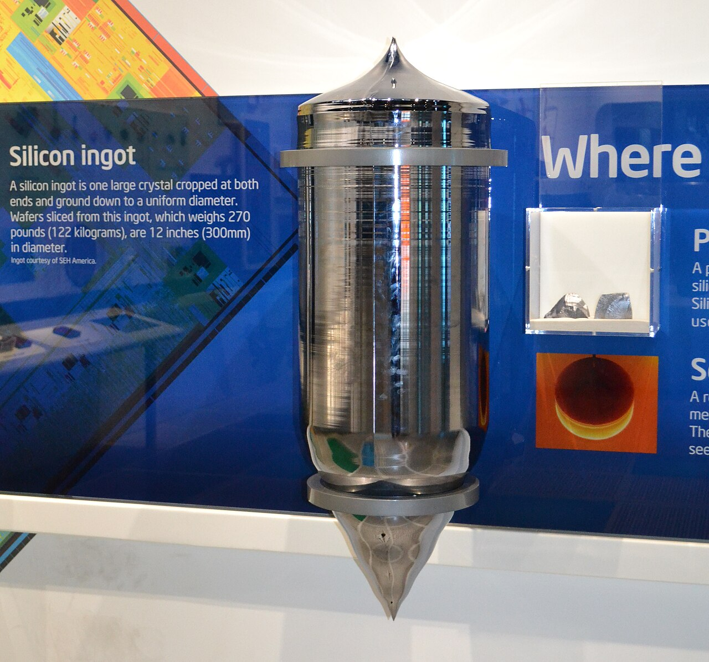
A modern 300 mm silicon ingot on display at the Intel Museum. This is the actual output of the Czochralski process: a single crystal up to 2 m long, 300 mm diameter, weighing 200–300 kg. Every atom is aligned in one perfect lattice. This is what your M4 Pro's silicon was cut from. Image: Oleg Alexandrov / Wikimedia Commons.
2. Melted at 1,420 °C under an inert argon atmosphere.
3. A tiny seed crystal (just a few mm wide, with a specific atomic orientation like <100>) is dipped into the melt.
4. The seed is rotated and pulled upward at ~1–2 cm/hour. Silicon atoms freeze onto the seed, copying its perfect crystal orientation. The result grows into a cylindrical boule.
5. After 1–2 days you have a single-crystal silicon ingot up to 300 mm across and 200 kg heavy — dangling from a rod originally the size of a pencil.
Further reading — dig into each stage
Step 2 — Sliced into wafers
The ingot is sliced into thin discs by a diamond wire saw — each disc is a wafer, less than 1 mm thick and polished to a mirror finish. Straight out of slicing, a wafer looks like a plain silver mirror — no colour, no patterns, just pure silicon. It only becomes the shiny rainbow you've seen in photos after Step 4 (lithography), when hundreds of microscopic transistor patterns get etched onto its surface. Those patterns are so incredibly small (a few nanometres wide) that light bouncing off them splits into a rainbow — the same reason a CD or oil on water looks colourful.
One ingot yields hundreds of wafers. One wafer will eventually yield hundreds of chips.
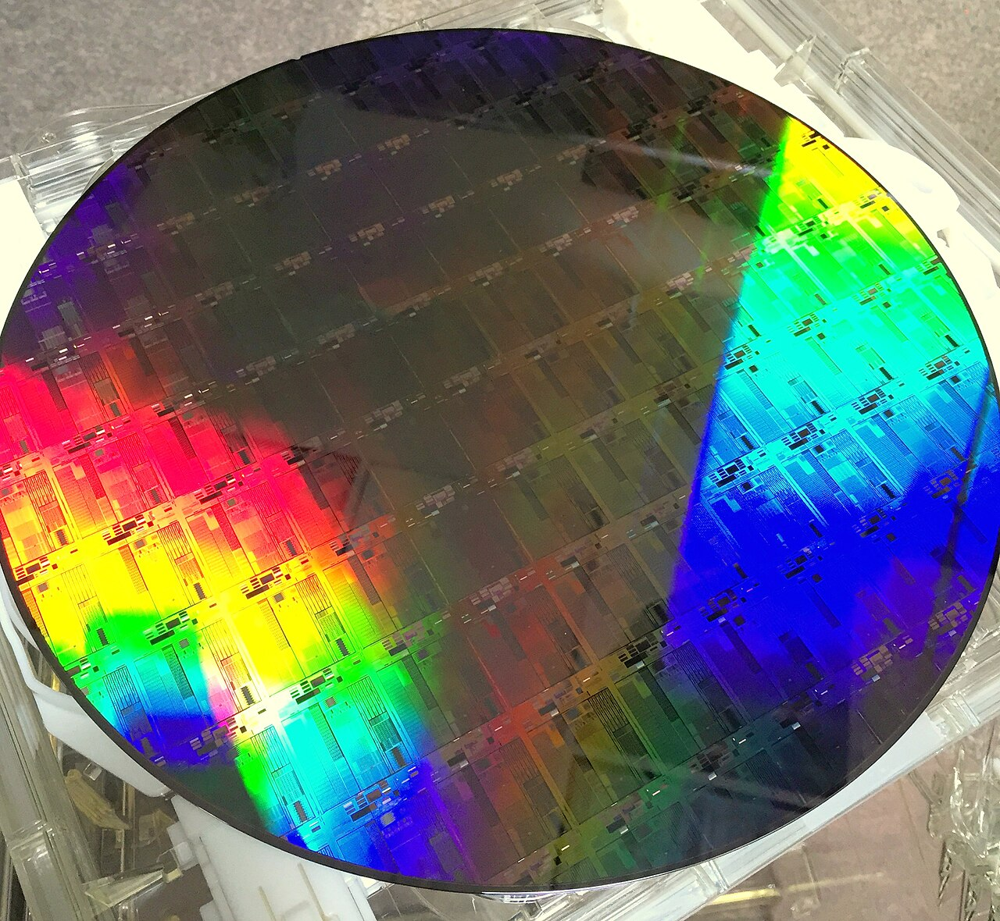
What a wafer looks like AFTER lithography (Step 4). The rainbow you see is not the raw silicon — it is thin-film interference caused by the hundreds of nanometre-scale transistor patterns already etched into the surface. If you saw this wafer straight out of Step 2 (freshly polished, before patterning), it would look like a plain silver mirror. Image: Wikimedia Commons.
A transistor is a tiny electrical switch — nothing more
Every computer is really just billions of on/off switches flipping trillions of times per second. Everything you've ever done on a computer — every Instagram post, every game, every Python program — is just switches turning on (1) and off (0). A transistor is one of those switches.
Before transistors, we used vacuum tubes (the size of a light bulb) as switches. The first computer, ENIAC (1945), had 17,000 of them and filled a room. Then in 1947 Bell Labs invented the transistor — the same on/off behaviour but a million times smaller, no heat, no glass. That single invention created every computer on Earth today. Your M4 Pro MacBook fits 55 billion of these switches into a piece of silicon the size of your fingernail (325 mm² — about the size of a postage stamp).
How is a switch actually MADE from silicon?
Pure silicon by itself is a semiconductor — it neither conducts electricity like copper nor blocks it like glass. It sits in the middle. That in-between property is exactly what makes it perfect for a switch: we can control when it conducts and when it blocks. The technique is called doping — we deliberately mix in a few atoms of another element (like phosphorus or boron) into specific tiny regions of the silicon. Those regions now behave differently. Line up two doped regions on either side of a normal silicon region, add an insulator layer and a metal wire on top, and you have built the world's simplest switch: a MOSFET (Metal-Oxide-Semiconductor Field-Effect Transistor).
■ Source & Drain — doped with phosphorus, become electron-rich
■ Channel — plain silicon; conducts only when the gate is ON
■ Substrate — the raw silicon wafer everything is built on
The build recipe — how ONE transistor is created from silicon
| # | Step | What happens on the wafer |
|---|---|---|
| 1 | Start with the polished wafer | Plain silicon. Mirror-like. Not yet a switch. |
| 2 | Grow a thin oxide layer | Heat the wafer in oxygen → a few atoms of silicon on top turn into SiO₂ (glass). This will be the insulator under the Gate. |
| 3 | Coat with photoresist | A light-sensitive chemical is spun over the entire wafer. |
| 4 | Expose with EUV light through a mask | Ultraviolet light shines through a stencil. Where light hits, the photoresist hardens. This is lithography (Step 4 coming next). |
| 5 | Etch away exposed silicon | Acid removes the unprotected regions, carving the shape of the future Source and Drain. |
| 6 | Doping — the magic step | Shoot phosphorus atoms into the exposed silicon. Those regions now have "extra electrons" (n-type). This is what turns plain silicon into a Source and a Drain. |
| 7 | Deposit metal for the Gate | A tiny metal wire is laid down over the channel, on top of the oxide insulator. |
| 8 | You now have 1 transistor. | Repeat this process — layer by layer, 100+ layers deep — until you have 55 billion of them. That's the M4 Pro in your MacBook. (The M4 base is 28 billion; the M4 Max is ~76 billion.) |
What a real MOSFET actually looks like (not just a diagram)
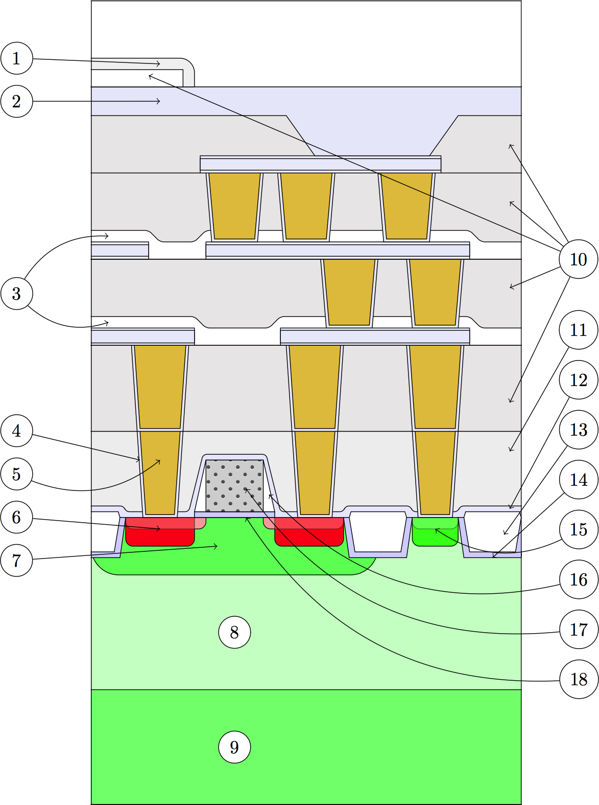
Cross-section of ONE real MOSFET inside an integrated circuit. You can see the Source and Drain regions (doped silicon at the bottom), the thin oxide layer, the Gate metal, and the layers of interconnect wiring stacked on top. This is exactly the structure of the diagram above — just built for real out of atoms. Image: Vegar Ottesen, Wikimedia Commons.
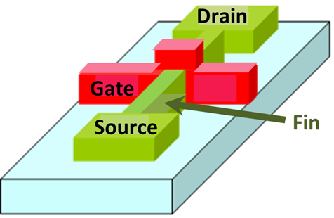
Modern 3D FinFET — from 2011 onwards, transistors stopped being flat. The channel became a vertical "fin" (blue) with the Gate wrapped around three sides. This gave the Gate much better control over the channel and let manufacturers keep shrinking transistors below 22nm. Apple's M4 Pro uses an even newer 3D style called GAA (Gate-All-Around) on the TSMC N3E node, where the Gate fully surrounds the channel wire. Image: Wikimedia Commons.
What "doping" actually looks like in a factory
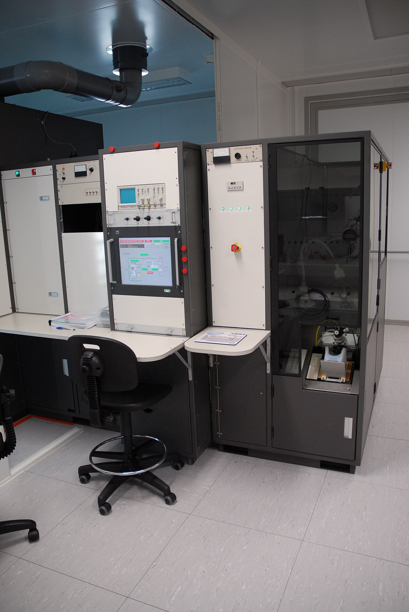
An ion implantation machine (LAAS-CNRS, France) — this is what actually performs the "doping" step. Wafers go inside; the machine accelerates phosphorus or boron ions to hundreds of thousands of volts and fires them into the exposed silicon at precise depths. Image: Wikimedia Commons.
Why it exists. Silicon by itself doesn't conduct electricity well enough to be a switch. To turn a small region into "n-type" (electron-rich) or "p-type" (hole-rich), you have to inject a few atoms of another element — phosphorus, boron, arsenic. You can't sprinkle them by hand at nanometre precision; you literally shoot them in with an ion beam.
What happens inside. Dopant gas is ionised, the ions are accelerated by an electric field, magnetically filtered so only one isotope makes it through, then rastered across the wafer. Every implanted atom now sits at a controlled depth inside the silicon. Then a rapid thermal anneal (~1000 °C for a few seconds) heals the crystal damage and "activates" the dopants.
One fact worth remembering: a modern chip goes through 10 to 20 separate implant steps at different energies for different regions. Each of your M4 Pro's 55 billion transistors got several precisely dosed atomic shots.
Further reading — go deeper on each step (click through)
Step 3 — The design (who decides what goes on the silicon?)
Before etching, someone has to design the chip. This happens in TWO layers:
- ARM ISA — designed and licensed by ARM Holdings (UK). Every Apple M-series, every Snapdragon, every iPhone/Android chip pays a royalty to ARM.
- x86-64 ISA — owned by Intel and AMD. Only they can build x86 chips.
- RISC-V — open-source, free to use. Rising fast.
What you'll see on python.org right now (Python 3.14)
| Your machine | Chip inside | ISA | Which installer to download |
|---|---|---|---|
| This MacBook (M4 Pro) — or any Mac since 2020 | Apple M1/M2/M3/M4 | ARM64 (arm64) | macOS 64-bit universal2 installer — one .pkg that contains both arm64 and x86_64 binaries; macOS picks the right one automatically. The only one you need. |
| Intel Mac (2006–2020) | Intel Core i5/i7/i9 | x86-64 | Same universal2 installer — still works. Older builds also offered a dedicated "macOS 64-bit installer" for Intel. |
| Windows PC — Intel or AMD | Intel Core / AMD Ryzen | x86-64 | Windows installer (64-bit) |
| Windows on ARM — Copilot+ PC | Snapdragon X / X2 Elite | ARM64 | Windows installer (ARM64) — different file. The 64-bit x86 one will run under emulation but slower. |
| Old 32-bit Windows PC (pre-2010) | Old Intel / AMD | x86 (32-bit) | Windows installer (32-bit) — only if you're stuck on a very old machine. |
(64-bit) for Intel/AMD, (32-bit) for legacy, and (ARM64) for Snapdragon Copilot+ PCs. This is the ARM-vs-x86 story from above, in real life.How to check which architecture your Python is running (paste in your terminal)
python3 -c "import platform, sys; print('Machine:', platform.machine(), '| Python:', sys.version.split()[0], '| Build:', platform.processor() or 'apple silicon')"
On your M4 Pro MacBook this prints something like Machine: arm64 | Python: 3.14.0 | Build: arm. On an Intel Mac or Windows PC it prints x86_64. On a Snapdragon Copilot+ PC it prints ARM64.
pip install will be x86 too. You will spend hours debugging why numpy is slow before realising the problem is architectural. Always download universal2 (Mac) or ARM64 (Windows on Snapdragon).
.pyd / .so file in your Python install is native machine code — and native machine code doesn't magically run on both. That is why the choice exists, and that is why ARM Holdings collects a royalty every time an ARM binary runs.
Step 4 — Etching the design onto silicon (EUV lithography)
Now the design must be printed onto the wafer. This is done by an EUV (Extreme Ultraviolet) lithography machine — it shines a special short-wavelength light through a stencil ("mask") onto the wafer, hardening transistor patterns just 3 nanometres wide (thinner than a strand of DNA). Only one company on Earth — ASML in the Netherlands — makes these machines. The full story of ASML, why they're the geopolitical lynchpin of 2026, and how their machines actually work is in Section 8.
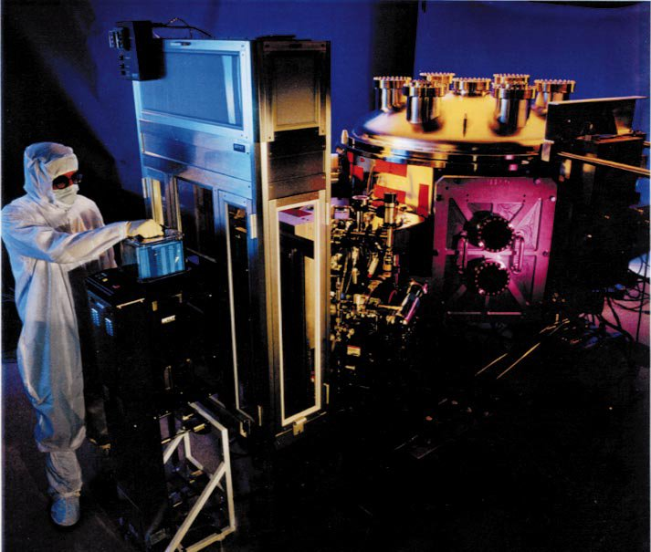
An ASML EUV lithography machine — the tool that etches the patterns. Image: Wikimedia Commons.
Step 5 — Manufacturing at a "fab"
The wafer now goes through dozens of etching, doping, and deposition steps inside a fab (fabrication plant) — the most expensive and secretive kind of factory on Earth. Air inside is 10,000× cleaner than a hospital operating theatre, workers wear head-to-toe "bunny suits", and lighting is yellow so stray UV doesn't accidentally expose the photoresist on the wafers.
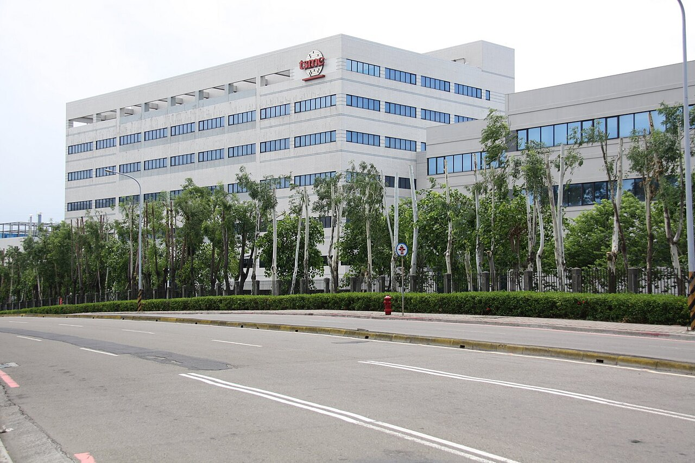
A TSMC fab in Taiwan — where most of the world's advanced chips are actually made. Image: Wikimedia Commons.
Who owns these fabs — TSMC, Samsung, Intel — and why TSMC now makes ~70% of the world's advanced chips is covered in Section 8.
Step 6 — Wafer cut into individual chips (dies)
After weeks of processing (dozens of etching + doping + deposition steps repeating what we just described), the wafer emerges covered in hundreds of finished chips. A precision diamond saw slices between them — this step is literally called "dicing". Each rectangular piece is called a die. Each die is a future chip.
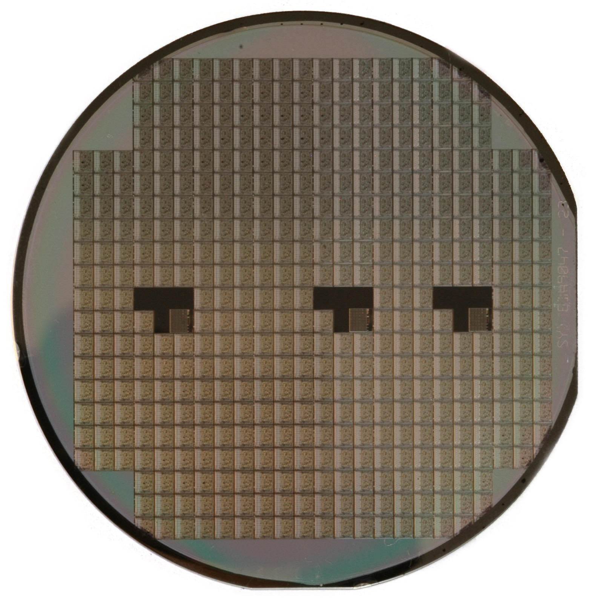
A processed 300 mm wafer with hundreds of dies. Look closely — each little square in the grid is one complete chip (billions of transistors). In this photo, three dies have already been physically removed for quality testing — those are the dark rectangles you can see. Each removed die is roughly the size you would put into your laptop. This one wafer will yield ~300–500 finished chips once dicing is complete. Image: Wikimedia Commons.
Step 7 — Packaged (heat spreader added) and shipped
Each die is glued to a package (a small circuit board), wired up to power and data pins, then covered with a metal heat spreader called the IHS — Integrated Heat Spreader. That shiny metal lid is what you actually see if you open a laptop. The real silicon — the tiny blue rectangle where the entire computer actually lives — is hidden underneath.
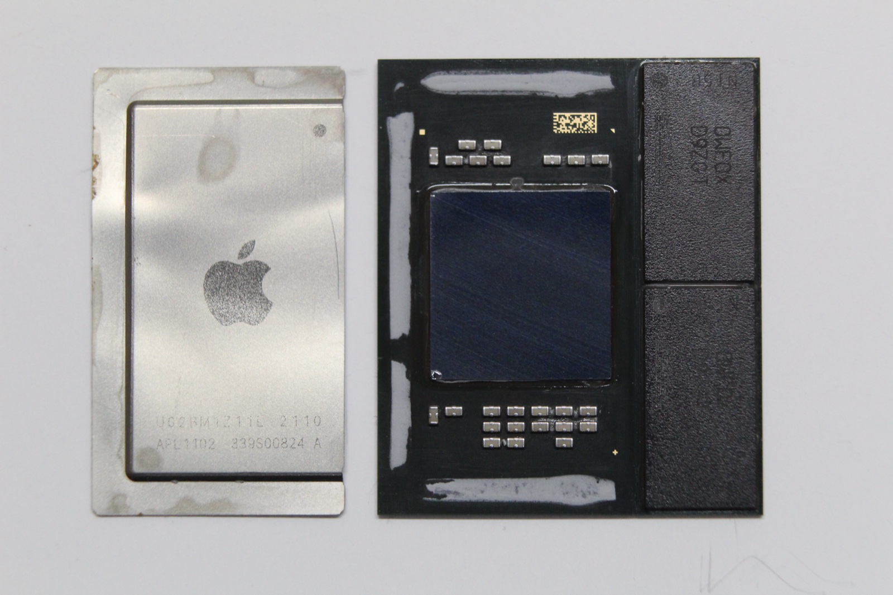
An Apple M1 chip with the heat spreader physically peeled off — this is exactly what your Mac looks like inside.
LEFT: The shiny metal lid engraved with the Apple logo. This is the IHS (Integrated Heat Spreader). Its job is to soak up the heat the chip generates and pass it into the laptop's cooling system. This is all anyone ever sees on the outside.
RIGHT: The same chip with the lid removed. Look at the small dark blue rectangle in the very centre — that is the actual silicon die. That tiny blue square (roughly 8mm × 15mm — about the size of your smallest fingernail) contains:
- 8 CPU cores (4 Performance + 4 Efficiency)
- 8 GPU cores
- 16 Neural Engine cores
- Memory controllers, Secure Enclave, Media Engine, and more
- 16 BILLION transistors, each ~5 nm wide
Step 8 — Zoom in on the silicon — what's INSIDE the chip?
OK — now we're at the answer to your question. What is a "core"? It's a specific rectangular region of transistors visible on the die. Let's use an Intel chip because Intel publishes annotated die shots — Apple does not.
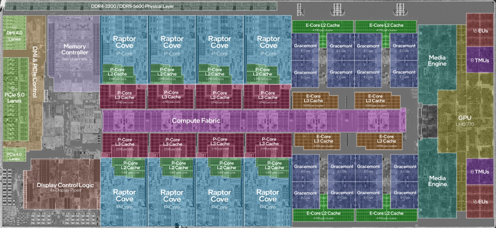
Intel Core i9-13900K die shot with every functional block labelled. Every rectangle labelled "Raptor Cove" is a Performance core (P-core) — there are 8 of them, 4 on top and 4 on bottom. Every rectangle labelled "Gracemont" is an Efficiency core (E-core) — there are 16 of them in 4 clusters. That purple bar in the middle is the "Compute Fabric" (ring bus) that lets cores talk to each other. Green blocks on the right are the GPU. This is what your CPU physically looks like under a microscope. Image: JmsDoug & Fritzchens Fritz, Wikimedia Commons (CC0 Public Domain).
What does that core actually DO all day?
Every core is a tiny complete CPU that runs a 5-step loop, billions of times per second:
| Step | What happens |
|---|---|
| 1 · Fetch | Reads the next instruction from memory (e.g. ADD R1, R2) |
| 2 · Decode | Figures out what that instruction means — add two numbers, load from memory, branch, etc. |
| 3 · Execute | Runs the operation — the ALU (Arithmetic Logic Unit) does the math |
| 4 · Memory access | Reads or writes memory if needed |
| 5 · Write-back | Stores the result in a register or memory |
Then it does the same thing again. And again. On your M4 Pro (14-core config), each Performance core runs this loop up to 4.5 billion times per second (that's what "4.5 GHz" means). Each Efficiency core runs it ~2.6 billion times per second. All 14 cores (10 P + 4 E) do it in parallel. Every second, your Mac executes tens of billions of instructions.
What about YOUR chip? — Apple's own M4 die shots
You do not have to imagine what the M4 silicon looks like — Apple published the actual die floorplan when they announced these chips. Below are Apple's official architecture graphics. Each one is the same die photo with a different block highlighted so you can see where each part physically lives.
The Apple M4 family — M4, M4 Pro, and M4 Max. Same architecture, three sizes. M4 = 28 billion transistors, M4 Pro = 55 billion (this is what's in your MacBook), M4 Max = ~76 billion. All manufactured by TSMC on the N3E (3 nm) process. Image: Apple Newsroom.
The 10-core CPU — where your Python actually runs
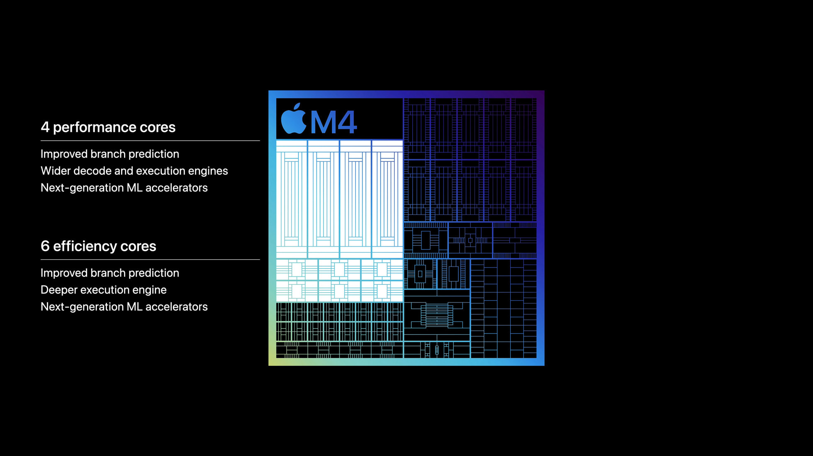
Apple M4 die — CPU highlighted. The four tall rectangles at the top-left are the Performance cores — that's where python cpu-demo.py 1 from Section 1 pins ONE core at 100% and burns. The six smaller rectangles below are the Efficiency cores — where Spotlight indexing, Mail sync, iCloud, and other background work happens without draining your battery. Everything else on the die (GPU, Neural Engine, Media, I/O) is idle when Activity Monitor shows "Python at 100%". Image: Apple Newsroom.
The 10-core GPU — where PyTorch and Metal live
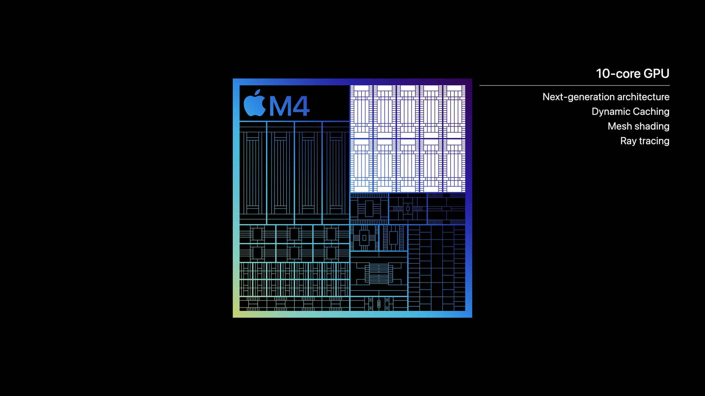
Same M4 die — GPU highlighted. The bright top-right block is the 10-core GPU. This is where every pixel on your screen is drawn, every video game runs, and every ML model that uses Metal (PyTorch's mps backend, Apple's Core ML) does its matrix math. When you enable GPU acceleration in a Python ML script, THIS is the block that lights up — not the red CPU cores at the top-left. Image: Apple Newsroom.
The 16-core Neural Engine — where Apple Intelligence runs
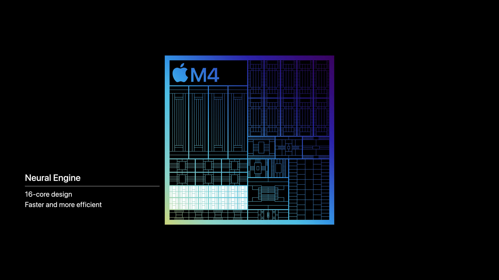
Same M4 die — Neural Engine highlighted. The bottom-left cluster of tiny tiles is the 16-core Neural Engine. It runs on-device Apple Intelligence, live transcription, Face ID, real-time image analysis in Photos — 38 trillion operations per second at a fraction of the power the GPU would need. This is the block your numpy/torch code will never touch directly (you need CoreML for it), but it's why the M4 iPad can do things a Windows laptop cannot. Image: Apple Newsroom.
python cpu-demo.py 1, exactly one of the four tall Performance-core rectangles turns red in Activity Monitor. Everything else on that piece of silicon — the other 3 P-cores, all 6 E-cores, the entire 10-core GPU, the 16-core Neural Engine, the Media Engines, the Secure Enclave — is sitting still. You paid Apple $2,000 for that silicon. Your Python is using ~7% of it. That is the question Section 1 raised. And that is what the rest of this lesson teaches you how to answer.
Same architecture, more of everything — the M4 Pro and M4 Max
The M4 Pro and M4 Max scale up the same building blocks. Apple published their floorplans too:
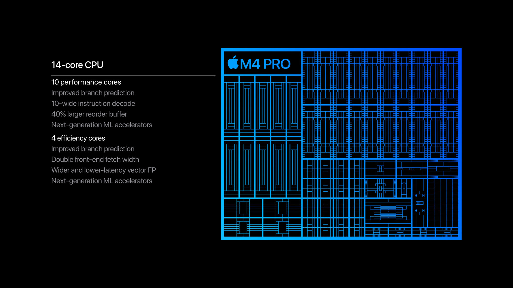
M4 Pro — 14-core CPU (10 P + 4 E). This is what's inside a MacBook Pro 14/16" M4 Pro. Image: Apple Newsroom.
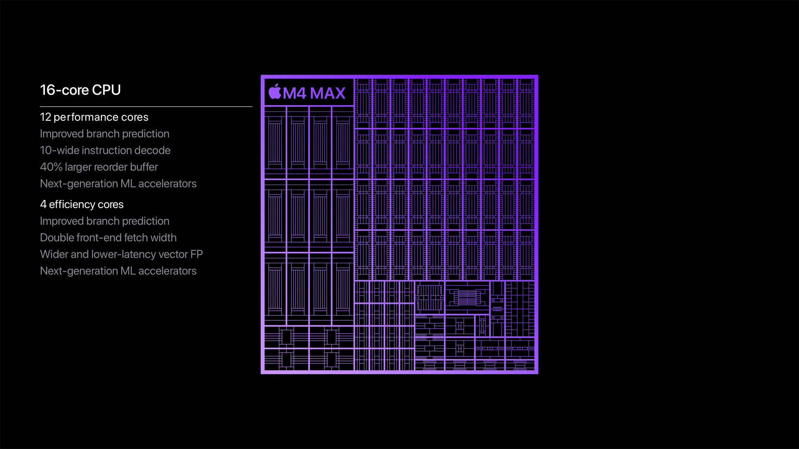
M4 Max — 16-core CPU (12 P + 4 E). This is what's inside the top-end MacBook Pro 16" and Mac Studio. Image: Apple Newsroom.
The Media Engine — the silicon nobody talks about but everyone uses
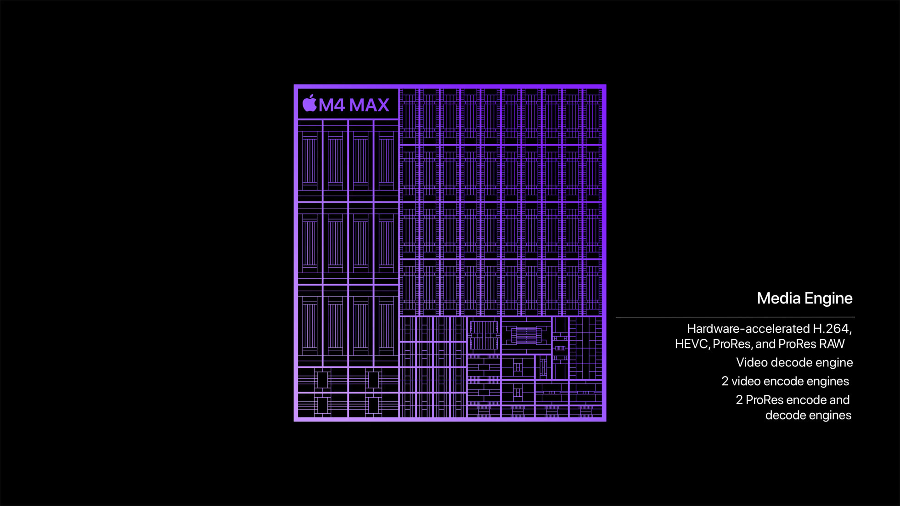
M4 Max die — Media Engine highlighted (bottom row). Dedicated hardware for H.264 / HEVC / ProRes encode and decode. This is why a MacBook Pro can play 8K video with the fans off — because it isn't using the CPU or GPU, it's using this fixed-function block. Every Zoom call, every YouTube video, every video export in Final Cut runs through this silicon, not through Python or the CPU. Image: Apple Newsroom.
Everything you just saw fits on a piece of silicon roughly the size of your fingernail. All manufactured by TSMC in Taiwan on the N3E (3 nm) process. When you run python cpu-demo.py 1 and Activity Monitor lights up one core — you are watching one of those four tall Performance-core rectangles running flat-out.
Now that you've seen how a chip is made and what a core physically is, the vocabulary below will map onto real, tangible pictures — not abstract ideas.
The 7 words to remember
| Word | What it means | Mac example | Windows example |
|---|---|---|---|
| Chip / Processor | Physical piece of silicon soldered to the board | Apple M4 Pro | Intel Core Ultra 7 270K, AMD Ryzen 9 9950X3D2 |
| SoC | System on Chip — CPU + GPU + NPU + memory controller all on one silicon | Every Apple M-series is an SoC | Snapdragon X2 Elite is an SoC |
| CPU | The "brain department" — runs your Python instructions | The CPU section inside M4 Pro | The whole Intel/AMD chip is CPU-first |
| Core | One independent worker inside the CPU | M4 Pro (this laptop) = 14 cores (10 P + 4 E) | Ryzen 9950X3D2 has 16 cores, Snapdragon X2 has 18 |
| Thread | Unit of execution the OS schedules on a core | Apple: 1 thread per core → M4 Pro = 14 threads (Apple has no Hyper-Threading) | Ryzen 9950X3D2: 16 cores → 32 threads (SMT) |
| GPU | Graphics department. Also great at massively parallel math (AI, video, games) | Built into M4 Pro — 20-core GPU | Usually a separate card — NVIDIA RTX 5090, AMD Radeon |
| NPU / Neural Engine | AI accelerator. Runs ML models efficiently | M4 Pro Neural Engine — 16 cores, 38 TOPS | Snapdragon X2 Hexagon NPU — 80 TOPS |
The philosophy split (this matters)
What is an NPU? (and why every 2026 chip suddenly has one)
An NPU (Neural Processing Unit) — Apple calls theirs "Neural Engine," Qualcomm calls theirs "Hexagon," Intel just calls it "NPU" — is a chunk of silicon designed to do one specific thing extremely fast and extremely efficiently: run neural networks (the math behind AI models).
GPU — great at parallel math, but built for graphics. Uses a lot of power. Bad for laptop battery.
NPU — a hyper-specialized chunk of silicon that does only one operation: matrix multiplication (which is ~90% of neural network work). Because it does only that, it can do it 10–50× more power-efficiently than a GPU.
Analogy: Your CPU is a Swiss Army knife. Your GPU is a food processor. Your NPU is a professional espresso machine — useless at anything else, but nothing beats it at its one job.
What "TOPS" means (the NPU spec you'll see everywhere)
TOPS = Trillions of Operations Per Second. It's how NPU speed is measured. Higher = more AI work per second. Numbers are usually quoted at INT8 precision (8-bit integer math — enough for most AI inference).
| Chip | NPU / Neural Engine | TOPS | What it can do live on-device |
|---|---|---|---|
| Apple M1 (2020) | Neural Engine, 16 cores | 11 TOPS | Live photo filters, dictation |
| Apple M4 (2024) | Neural Engine | 38 TOPS | Apple Intelligence (LLM on-device) |
| Apple M4 Pro (2025) | Neural Engine | ~40+ TOPS | Full LLM inference, image gen |
| Intel Core Ultra 200V (2024) | NPU 4 | 48 TOPS | Copilot+ eligible |
| AMD Ryzen AI 300 (2024) | XDNA 2 | 50 TOPS | Copilot+ eligible |
| Snapdragon X Elite (2024) | Hexagon | 45 TOPS | Copilot+ eligible |
| Snapdragon X2 Elite Extreme (2026) | Hexagon | 80 TOPS | Fastest laptop NPU today |
| NVIDIA RTX 5090 (dedicated GPU) | Tensor Cores | ~3,300 TOPS | Data-center-grade AI, but 450W of power |
Why NPUs matter for concurrency (the connection to Python)
"When someone says 'chip' on a Mac, they mean the whole SoC — CPU plus GPU plus Neural Engine, all together. When someone says 'chip' or 'CPU' on a Windows PC, they usually mean just the CPU. Same word, different scope. And the NPU — that new thing in every 2026 laptop — exists because CPUs waste too much power on AI and GPUs waste too much battery. NPUs are specialists. One chip, many specialists, all working at once. That's concurrency in silicon. We're just going to teach your Python programs to do the same trick."
The birth of the microprocessor — Intel 4004
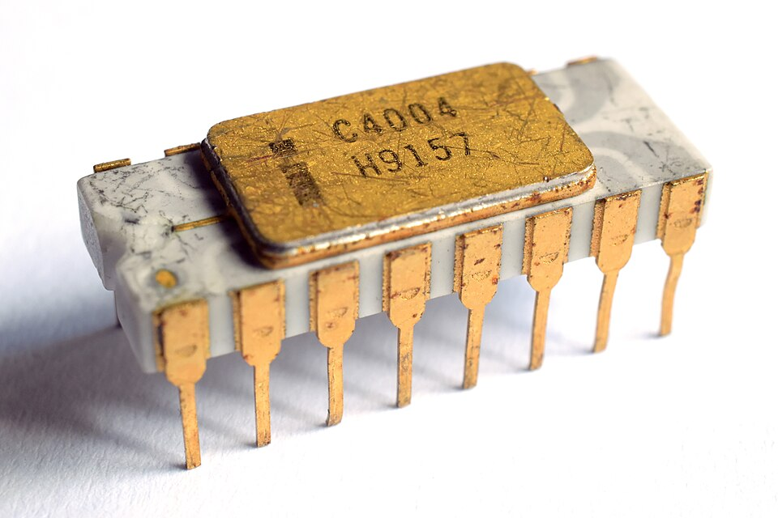
The Intel 4004 (1971) — the world's first commercial microprocessor. Roughly the size of a fingernail. Image: Thomas Nguyen, Wikimedia Commons (CC BY-SA 4.0).
Before 1971, a computer filled an entire room. IBM mainframes were the size of refrigerators, needed dedicated air conditioning, and cost hundreds of thousands of dollars. Only universities and big corporations had them.
Then in November 1971, Intel released the 4004. A single chip. It contained a complete CPU. For the first time in history, "computer" and "one small chip you could hold on your fingertip" meant the same thing.
For comparison — one core of an Apple M4 Pro today runs at ~4.5 GHz (about 6,100 times faster) and the whole M4 Pro chip contains roughly 55 billion transistors (about 24 million times more).
740 kHz = 740,000 ticks per second. The 4004 needed about eight ticks per instruction, so it managed roughly 92,000 instructions per second (adding two 8-digit numbers took ~850 microseconds → about 1,000 such additions per second). Sounds fast, until you realise a single M4 Pro P-core does around 22 billion operations per second. In the time the 4004 finishes one 8-digit addition, an M4 Pro core finishes about 19 million operations.
But the 4004 had one core. One brain. One instruction at a time. That was normal for the next 35 years — every desktop, laptop, and workstation had exactly one core. If your program was slow, you waited for Intel to release a faster chip.
"Before 1971, computers were the size of refrigerators. In November 1971, Intel put an entire CPU on one chip the size of your fingernail. This changed everything — but for the next 35 years, every one of those chips had exactly ONE core. One brain. One instruction at a time. Faster software meant waiting for a faster chip."
The Free Lunch era — clock speeds explode
Between 1971 and the early 1990s, chips got steadily better. Then in 1993, Intel launched the Pentium — 60 MHz, still one core, still one instruction at a time. This is the chip that ran Windows 95. Your parents probably had a Pentium computer.
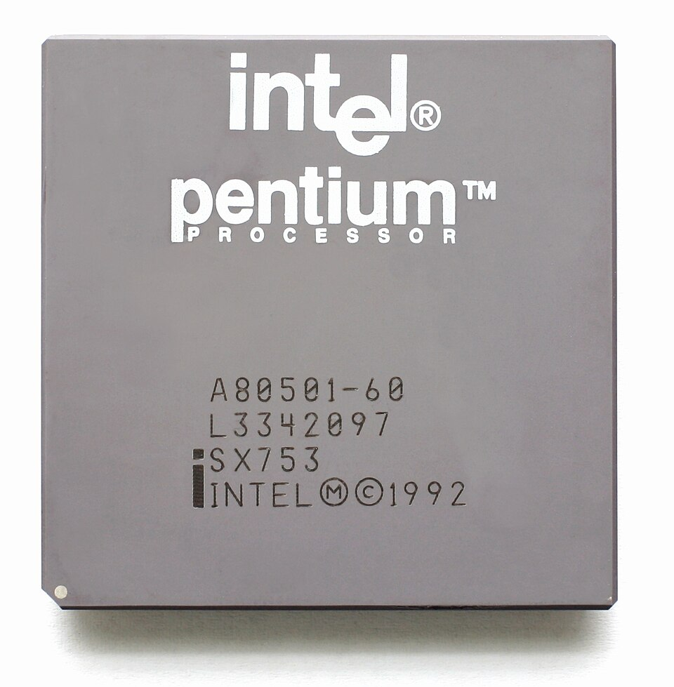
Intel Pentium (P5), 1993. Konstantin Lanzet, Wikimedia Commons.
The 1993 Pentium — 3.1 million transistors, one core, 60 MHz. This was the golden age of "one chip, one brain."
The gold cap you see is the ceramic package cover. Underneath is the actual silicon die.
Two things were making chips faster every year — together they created what programmers called the Free Lunch.
55 years of chips on one vertical timeline
Read this top-to-bottom. Left column = year, coloured line = which era we're in, right card = the chip that defined the year. The red pulsing dot at 2005 is the Wall — the moment single-core speed stopped rising and the whole industry pivoted to many cores. Everything below that dot is why your Python code has 12+ cores to talk to today.
Intel 4004 — the first microprocessor on one chip
Fingernail-sized. Before this, "computer" meant a fridge in an air-conditioned room. This starts the entire story.
Intel 8086 — the x86 instruction set is born
Every Windows/Linux PC for the next 45 years runs a descendant of this chip. Still 1 core.
Intel Pentium — the golden Free Lunch begins
Windows 95 shipped on this. Every year from here, the same code magically ran faster. Programmers did nothing. Chips did everything.
Intel Pentium II — 5× faster in 4 years
Same code from 1993 now runs 5× faster with zero effort. This is the Free Lunch working.
AMD Athlon — first chip to beat Intel head-to-head
Competition begins. Intel and AMD leapfrog every year. Users win. Software runs faster whether you like it or not.
Intel Pentium 4 — NetBurst pushes GHz hard
Intel publicly promised 10 GHz by 2005. Physics disagreed. This is the year the ramp starts to bend.
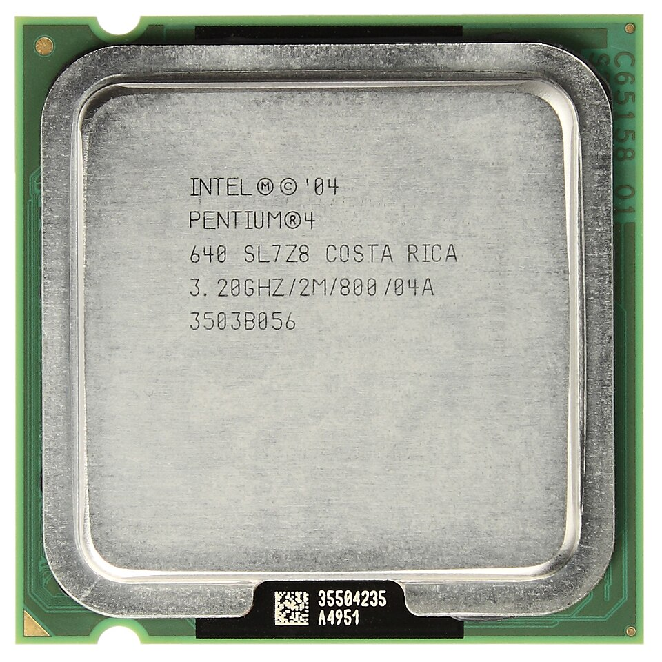
Pentium 4 Prescott — nicknamed "PresHot" 🔥
Chip literally started to melt. Needed huge heatsinks and screaming fans. Intel tried to push higher. Silicon said no.
🔥 THE WALL — the Free Lunch is over
Heat wall: doubling GHz roughly doubles power & heat — a 10 GHz single core needs liquid-nitrogen cooling.
Light wall: at 5 GHz, each tick lasts 0.2 ns — in that window light itself travels only 6 cm, barely across the chip.
From 2005 on: no mainstream single core has meaningfully exceeded 5 GHz. Twenty-one years of frozen clock speeds. Concurrency is no longer optional — it's the only remaining path to speed.
Intel Core Duo — the pivot to many cores
New strategy: if one core can't get faster, put many cores on one chip. First mainstream dual-core in every laptop. AMD Athlon 64 X2 arrives too.
Quad-core becomes the desktop standard
Single-threaded code now uses 25% of your CPU. The other 75% sits idle. The "wasted cores" problem enters every developer's laptop.
AMD Ryzen (Zen) — 8 cores at consumer prices
AMD comes back from the dead. Core counts explode. Suddenly your laptop has 8, 12, 16 cores — and your Python script still only uses one.
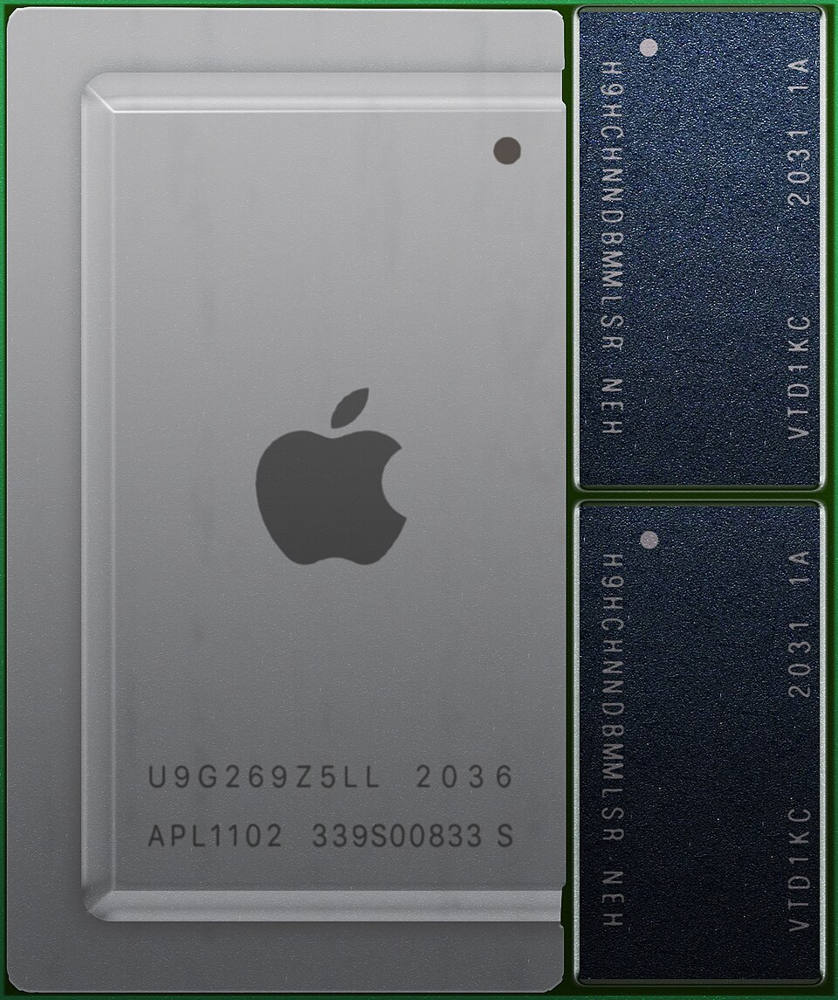
🚀 Apple M1 — the SoC revolution
First Mac chip designed by Apple. CPU + GPU + Neural Engine + unified memory all on one silicon die. Battery life doubles overnight. The entire industry starts copying the recipe.
Today — cores everywhere, still one Python thread
Windows AMD: Ryzen 9950X3D2 (16 c / 32 t) · Windows ARM: Snapdragon X2 Elite (18 c)
Your laptop has 10–18 cores. Your Python script uses one. That's the question from Section 1. Everything after this chapter is how to answer it.
Read the whole trajectory in one glance — 740 kHz (1971) → 3.8 GHz single core (2004) → wall (2005) → many cores at the same GHz (2006 onwards) → whole SoCs (2020 onwards). Clock speed rose ~5,000× in 33 years, then stopped. Since then, all the gains have come from having more workers, not faster ones.
How to actually feel these numbers
| Speed | Ticks per second | Something at that speed |
|---|---|---|
| 1 Hz | 1 | Your resting heartbeat |
| 80 Hz | 80 | Hummingbird wings flapping |
| 740 kHz | 740,000 | Intel 4004 (1971) — 8 ticks per instruction → ~92,000 instructions/sec |
| 60 MHz | 60,000,000 | Intel Pentium (1993) — ~550× faster than 4004 |
| 1 GHz | 1,000,000,000 | AMD Athlon (1999) — one billion ticks per second |
| 2.4 GHz | 2,400,000,000 | Your WiFi router radio |
| 3.8 GHz | 3,800,000,000 | Pentium 4 Prescott (2004) — the ceiling. Chip started melting. |
| 5 GHz | 5,000,000,000 | Fastest modern CPU cores. Still hasn't gone significantly higher in 20+ years. |
In 1999, AMD launched the Athlon — the first CPU that beat Intel in raw speed. Suddenly there was real competition. Intel and AMD raced each other year after year. Every generation of chip made every program on earth faster automatically.
"For 30 years, being a programmer was easy. Write your code, ship it, wait a year, Intel and AMD released a faster chip, your code magically ran faster. This was called the Free Lunch. It was going to last forever. Except — spoiler — it didn't."
The Wall — physics ends the Free Lunch
In 2004, Intel released the Pentium 4 Prescott. They pushed it to 3.8 GHz. They tried to go higher. And the chip started to melt.
Intel Pentium 4 Prescott (2004), 90 nm, 3.2 GHz. Sting, Wikimedia Commons.
The Pentium 4 Prescott — Intel's Icarus moment. 125 million transistors packed into 90 nm, pushed to 3.8 GHz. It ran so hot it needed heavy heatsinks and loud fans. Nickname: "PresHot."
Intel had promised the industry 10 GHz by 2005. Physics said no. Tejas and Jayhawk (Intel's next planned single-core chips) were cancelled. Clock speeds have been frozen at 3–5 GHz ever since.
2. The light wall. At 5 GHz, each clock tick lasts 0.2 nanoseconds. In that tiny window, light itself travels only 6 centimeters — barely across the chip. Electrical signals in silicon are even slower (~2/3 the speed of light). Push the clock higher and the signal literally cannot cross the chip in one tick. The speed of light became a bottleneck.
"2005. Intel pushed the Pentium 4 to 3.8 GHz and it started melting. They tried to go higher, physics said no. Since 2005, no single core has meaningfully exceeded 5 GHz — that's twenty years of frozen clock speeds. And that's the moment programmers stopped getting free performance. From now on, if you want more speed, YOU have to do the work."
The multi-core pivot — more workers instead of faster workers
If you cannot make one core faster, put more cores on the same chip. That became the new performance strategy. In 2006, Intel launched the Core Duo — the first mainstream dual-core CPU. AMD followed with the Athlon X2. Two brains on one chip.
Today, in 2026, every serious laptop has 10+ cores. Servers have 64, 96, 128+ cores. Your machine is a warehouse full of workers.
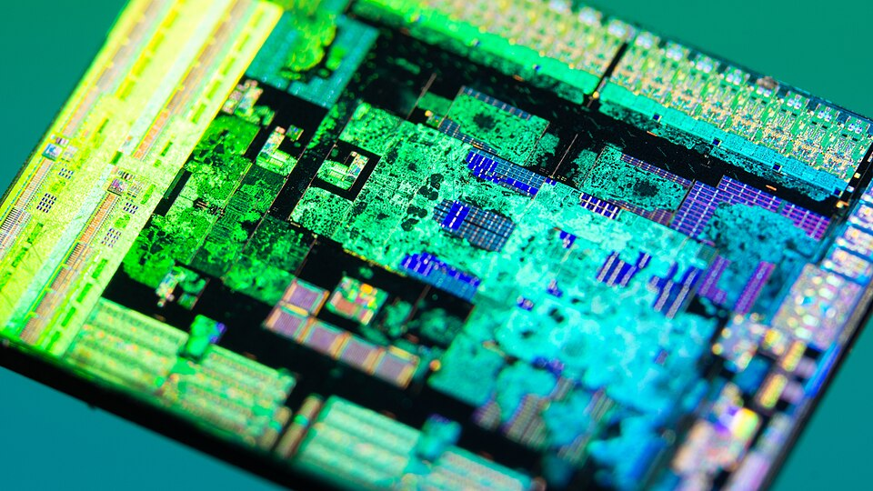
An AMD Ryzen 5 3600 (Zen 2) die shot. The small square on the right is one chiplet containing multiple CPU cores. The larger square on the left is the I/O die. This is what "multi-core" physically looks like — many identical cores side by side. Photo: Fritzchens Fritz, Wikimedia Commons.
Concurrency (interleaving many tasks) has existed since the 1960s. Multics (1964), Unix (1969), Windows NT (1993), Linux (1991), Mac OS X (2001) all ran hundreds of programs concurrently on single-core CPUs — the OS just time-sliced them. Even on a 2003 laptop you could run Firefox, WinAmp, and a background download at once. Python's
threading module was added by Guido in 1992 — 13 years before consumer multi-core existed.Parallelism (many tasks actually running at the same instant) is what became mainstream for consumer software in 2005. Before then, threads on one core simply took turns. After then, threads on multiple cores can actually run simultaneously — and only then could concurrent code start giving real CPU speedups.
So the "6% problem" above isn't "concurrency was invented in 2005". It's "parallelism finally became available in 2005 — and Python programmers still leave 94% of it on the table."
Amdahl's Law — the ceiling on parallel speedup
Even with infinite cores, you cannot go faster than the serial fraction of your program allows. If 10% of your program must run sequentially, the maximum speedup is 10×, no matter how many cores you throw at it.
| Parallel fraction | Max speedup | Speedup on 16 cores |
|---|---|---|
| 50% | 2× | 1.8× |
| 90% | 10× | 6.4× |
| 99% | 100× | 13.8× |
"Intel's answer: if one brain can't get faster, put many brains on one chip. 2006 — first dual-core. 2010 — quad-core. Today — 16, 24, 36 cores. Your laptop is a warehouse of workers. And here's the disaster: your Python script hires ONE of them. Nine or fifteen or thirty-five are asleep on the job."
Apple Silicon and the SoC revolution
For 15 years after 2005, Intel and AMD followed the same recipe: more cores, more cache, incremental improvements. Every Mac from 2006 to 2020 shipped with an Intel chip. Then, on November 10, 2020, Apple did something dramatic.
The moment: "Apple unleashes M1"
Apple M1, November 2020. Illustration: Henriok, Wikimedia Commons.
Apple announced the M1 — their own custom chip for the Mac. Not made by Intel. Not made by AMD. Designed inside Apple, manufactured by TSMC on a 5-nanometer process. 16 billion transistors on one small piece of silicon.
Apple committed to a full 2-year transition from Intel to Apple silicon across their entire Mac lineup. By 2022 it was complete. Not a single new Mac ships with an Intel chip today.
The performance impact vs the last Intel Macs
All numbers Apple's own from the launch, but independent benchmarks (Anandtech, Geekbench) largely confirmed them. The MacBook Air with M1 became the first fanless Mac laptop in over a decade — completely silent, all day battery.
Why this matters for concurrency — the three ingredients of the M1
CPU + GPU + Neural Engine + Secure Enclave + memory controller — one piece of silicon. Fewer chips means faster communication, less power, and no data has to travel far.
One pool of RAM shared by CPU, GPU, and Neural Engine. On a traditional PC, moving data from CPU to GPU means copying across a PCIe bus — slow, energy-hungry. On M1, they all just look at the same memory. This is huge for ML and video, and it's why the M1 handles concurrent workloads (say, a Python script training a model while the GPU renders) so gracefully.
M1 shipped with 4 "Firestorm" performance cores + 4 "Icestorm" efficiency cores. Heavy work goes to the P-cores; background stuff goes to the E-cores using much less power. Intel copied this idea 2 years later with their "P-core + E-core" hybrid design in Alder Lake (12th gen Core, 2021). AMD followed with Ryzen Zen 5c cores.
Why it matters here: For 40 years, Windows only ran on x86 (Intel / AMD). When Apple's M1 (an ARM chip) crushed Intel in 2020 on both speed AND battery, Microsoft had to make Windows run on ARM chips too — or lose the premium laptop market to Apple. That's what "Windows on ARM" is: Windows recompiled and re-engineered to run on ARM chips like the Snapdragon X series.
The ARM licensing model — one blueprint, dozens of chips
ARM's business model is unique in the chip world. They don't make anything physical — they just design the instruction set and license it. Here's how the layers stack up:
Windows followed — the Snapdragon X wave
Snapdragon X Elite (Qualcomm, 2024) — Windows on ARM with an Apple-style SoC design. Logo: Wikimedia Commons.
Qualcomm noticed. In June 2024 they launched the Snapdragon X Elite — 12 custom Oryon CPU cores + Adreno GPU + Hexagon NPU on a single 4nm SoC. This powered the first wave of Copilot+ PCs from Microsoft, Lenovo, Dell, HP.
In 2026, the Snapdragon X2 Elite Extreme pushed this to 18 cores (12 Prime + 6 Performance) with an 80-TOPS NPU. The Windows-on-ARM ecosystem is finally credible competition to Apple silicon.
Apple vs Qualcomm — same silicon idea, opposite business model
Both companies make impressive ARM SoCs on TSMC's most advanced process. But how the two ecosystems are structured could not be more different — and this explains everything about why Apple laptops feel more polished, and why Copilot+ PCs come in every possible size and price.
| Layer | Apple | Copilot+ PC (Snapdragon) |
|---|---|---|
| Chip design | Apple | Qualcomm |
| Chip manufacturer (fab) | TSMC | TSMC |
| Instruction set | ARM | ARM |
| Operating system | Apple (macOS) | Microsoft (Windows 11 on ARM) |
| Laptop design + assembly | Apple | Microsoft (Surface), Lenovo, Dell, HP, Samsung, ASUS, Acer, Razer… |
| Vertical integration | 🟢 One company owns the whole stack | 🔴 Every layer is a different company |
Copilot+ PCs shipping in 2026 with Snapdragon inside: Microsoft Surface Pro 12, Surface Laptop 8, Lenovo ThinkPad X13s Gen 3, Dell XPS 13 (Snapdragon), HP OmniBook Ultra, Samsung Galaxy Book5 Edge, ASUS ProArt PZ13, and more. All different laptops from different brands — same Qualcomm chip inside.
The 2026 landscape at a glance
| Ecosystem | Chip | Cores | Extra on chip |
|---|---|---|---|
| Mac | Apple M4 (Oct 2024) — MacBook Air, iMac, Mac mini base | 10 CPU (4P + 6E) | + 10-core GPU + 16-core Neural Engine (38 TOPS) |
| Mac | Apple M4 Pro (Oct 2024) — 14"/16" MacBook Pro, Mac mini · this laptop | 12 (8P+4E) or 14 (10P+4E) — this MacBook = 14 | + 16 or 20-core GPU (this MacBook = 20) + 16-core Neural Engine (38 TOPS) + 48 GB unified memory |
| Mac | Apple M4 Max (Oct 2024) — MacBook Pro | 14 or 16 (10-12P + 4E) | + 32 or 40-core GPU + 16-core Neural Engine |
| Mac | Apple M3 Ultra (Mar 2025) — Mac Studio (Apple has confirmed no M4 Ultra — the M4 Max lacks the UltraFusion connector) | 32 CPU (24P + 8E) | + 80-core GPU + 32-core Neural Engine |
| Windows (Intel) | Core Ultra 7 270K Plus | 24 (8P + 16E) | Weak iGPU; usually paired with NVIDIA/AMD card |
| Windows (AMD) | Ryzen 9 9950X3D2 | 16 / 32 threads | Weak iGPU; usually paired with separate GPU |
| Windows (ARM) | Snapdragon X2 Elite Extreme | 18 (12 Prime + 6 Perf) | + Adreno GPU + 80-TOPS Hexagon NPU |
Further reading — the M1 story
"November 10, 2020. Apple launches the M1 and changes the whole industry overnight. Not just faster — completely different philosophy. One chip, everything on it. Unified memory so CPU and GPU share data without copying. Performance cores plus efficiency cores. And crucially — 2x battery life on the same laptop. Intel and AMD spent the next 4 years copying every one of those ideas. Windows on ARM finally caught up in 2024 with Snapdragon X. Today whether you're on Mac or Windows, your chip has 10, 18, 36 cores. And here's the punchline — none of it matters if your Python program only uses one. That's what the rest of this lesson is about."
Who designs your chip. Who manufactures it. (They're not the same company.)
Question: Apple designed the M4 Pro in your MacBook. So who built it? Not Apple. It was fabricated in Taiwan by a company called TSMC. The same TSMC also makes the chips for AMD, NVIDIA, Qualcomm, MediaTek, and dozens of others.
The semiconductor industry has split into four distinct roles. Understanding this map is the difference between sounding informed and sounding like a hobbyist.
The four roles
| Role | What they do | Big names in 2026 |
|---|---|---|
| Fabless designer | Design chips. Don't own factories. Contract manufacturing to foundries. | Apple, AMD, NVIDIA, Qualcomm, Broadcom, MediaTek |
| Foundry (pure-play) | Build chips designed by others. No products of their own. | TSMC (~70% market share), Samsung Foundry (~11%), GlobalFoundries, SMIC, UMC |
| IDM — Integrated Device Manufacturer | Both design and manufacture their own chips. | Intel (historically dominant, now struggling), Texas Instruments, Micron, Samsung (mixed model) |
| IP licensor | Design instruction sets and reusable core "IP blocks". License them to everyone. | ARM Holdings (their designs power virtually every phone), RISC-V (open source), Imagination |
TSMC — the single most important company in modern computing.
TSMC (Taiwan Semiconductor Manufacturing Company) makes ~70% of the world's advanced chips. If a war disrupted Taiwan, the entire global tech industry — every iPhone, every NVIDIA GPU, every AMD Ryzen, every Apple Mac — would grind to a halt within months.
Founded 1987. Invented the "pure-play foundry" business model. In 2020 they were the first to volume-manufacture 5nm chips (the Apple M1 was one of the first). In 2025 they hit 2nm.
ARM — the "invisible" company inside almost every phone, tablet, and Apple Mac.
ARM Holdings designs a CPU instruction set called ARM (contrast with Intel's x86). They license it to Apple, Qualcomm, Samsung, NVIDIA, Amazon (AWS Graviton), Google (Tensor). Every M-series Mac chip and every Snapdragon is built on ARM's instruction set.
ARM's model is unique — they don't make a single chip. They just license the design. Every ARM-based phone in the world pays them a royalty. Market cap ~$140 billion. Owned by SoftBank.
•
macOS 64-bit universal2 installer ← works on both Intel Macs and Apple Silicon (M-series). "Universal2" means the binary contains both x86 and ARM code.•
Windows installer (64-bit) ← for Intel and AMD CPUs (this is x86_64)•
Windows installer (ARM64) ← for Snapdragon X laptops•
Windows installer (32-bit) ← old x86 machinesThat's why the download page has so many options. Python itself has to be compiled separately for each instruction set. If you download the wrong one, you get x86 Python running under ARM emulation on your Snapdragon — much slower. This is why ARM vs x86 isn't just chip-industry trivia — it decides which Python binary you install on your own laptop.
Who makes what — the 2026 map
| Chip you use | Designed by | Instruction set | Manufactured by |
|---|---|---|---|
| Apple M4 Pro (MacBook) | Apple | ARM (licensed) | TSMC (3nm) |
| iPhone A19 Pro | Apple | ARM (licensed) | TSMC (2nm) |
| AMD Ryzen 9950X3D2 | AMD | x86 (AMD/Intel co-owned) | TSMC (4nm) |
| Intel Core Ultra 270K | Intel | x86 (Intel-owned) | Intel + some TSMC |
| Snapdragon X2 Elite | Qualcomm | ARM (Oryon custom cores) | TSMC (4nm) |
| NVIDIA RTX 5090 (GPU) | NVIDIA | NVIDIA's own (CUDA) | TSMC (4nm) |
| NVIDIA Blackwell B200 (AI) | NVIDIA | NVIDIA's own | TSMC (4nm) |
What is a "fab"? — the $20-billion factory nobody sees
Every time we've said "TSMC manufactures it" or "made at Fab 52 in Arizona," we've been using the word fab. Let's define it properly, because a fab is the most expensive, most secretive, most important type of factory on Earth — and there are only a handful of them.
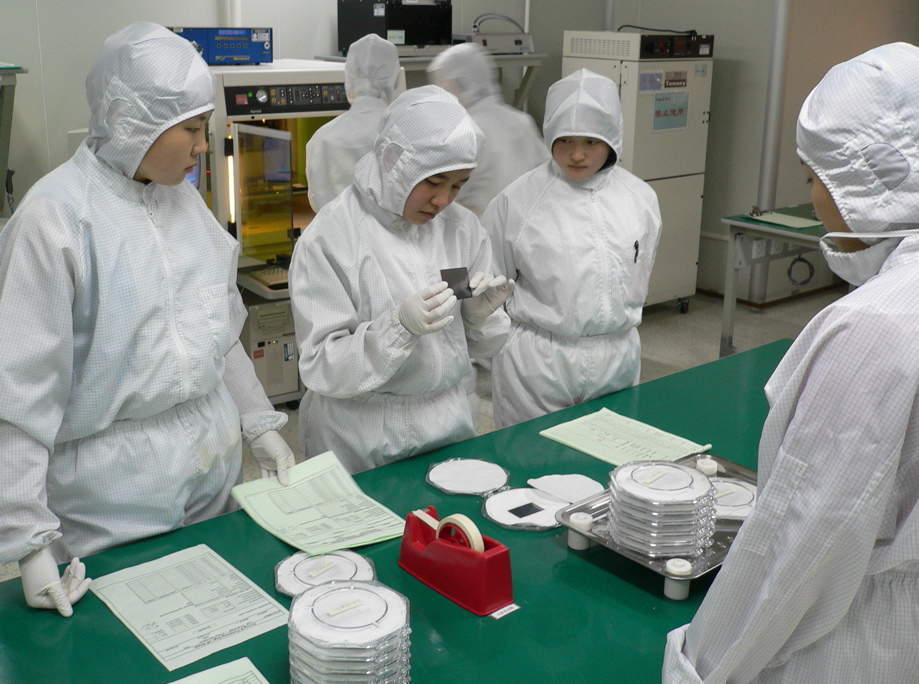
Workers in "bunny suits" inspecting a wafer inside a semiconductor cleanroom. Every particle of dust from a normal room would ruin a chip. Photo: Steve Jurvetson, Wikimedia Commons (CC BY 2.0).
Fab = fabrication plant (also called fabrication facility, or a foundry when it manufactures chips for other companies). It's where raw silicon wafers are turned into finished chips through hundreds of chemical and photolithography steps.
Fewer than 10 fabs on Earth can currently make leading-edge (3nm or better) chips. Most are in Taiwan (TSMC), a few in South Korea (Samsung), and Intel has some in the US and Ireland.
What makes a fab so extreme
| Property | Reality |
|---|---|
| Cost to build | ~$10 – $30 billion for a leading-edge fab. TSMC's Arizona Fab 21 cost ~$40 billion. |
| Size | Roughly the footprint of 10 football fields. Fab 52 in Arizona is 700,000 sq ft. |
| Cleanliness | 10,000× cleaner than a hospital operating room. Class 1 cleanroom = fewer than 1 dust particle per cubic foot. A single particle of dust that lands on a wafer at the wrong moment ruins that whole chip. |
| What workers wear | Full-body "bunny suits" covering hair, skin, mouth. Humans shed millions of skin cells per hour — a cleanroom can tolerate none. |
| Time to build | 3 – 5 years from breaking ground to first chip. Then years more to get "yield" (percentage of working chips per wafer) up to profitable levels. |
| Time to make one chip | ~3 months. A wafer visits ~1,000 process steps in the fab, some steps multiple times. |
| Number of leading-edge fabs on Earth | Fewer than 10. This is the entire capacity of the modern world. |
How small is 3 nanometer, really? — feel the scale
When we say TSMC makes "3nm chips," we're throwing around a number so small nobody can picture it directly. Here's the scale in things you can actually imagine:
| Object | Size | vs a 3nm transistor |
|---|---|---|
| Human hair (width) | ~80,000 nanometers | ~27,000× larger |
| Red blood cell | ~7,000 nanometers | ~2,300× larger |
| Bacteria (E. coli) | ~2,000 nanometers | ~670× larger |
| Virus (SARS-CoV-2) | ~100 nanometers | ~33× larger |
| Wavelength of visible light | ~400 – 700 nanometers | ~150× larger |
| DNA double helix (width) | ~2 nanometers | Almost the same size! |
| A "3nm" transistor gate feature | ~3 nanometers | Baseline |
| Silicon atom (diameter) | ~0.2 nanometers | ~15× smaller |
ASML — the $200M Dutch machine that makes it all possible
An ASML EUV (Extreme Ultraviolet) lithography tool. The size of a small bus, filled with 100,000+ tiny coordinated mechanisms. Photo: Wikimedia Commons.
TSMC has fabs. But you cannot build a modern fab without buying machines from ASML — a Dutch company in Veldhoven. ASML makes the EUV (Extreme Ultraviolet) lithography machines that etch nanometer-scale patterns onto silicon wafers. And ASML is the only company in the world that makes these machines.
Founded 1984 as an obscure Dutch spinoff from Philips. In 2024 they had a $400 billion market cap — bigger than most oil companies.
How ASML's EUV machine actually works (the wildest engineering on Earth)
2. Zap each droplet with a high-power laser twice — first to flatten it, then to vaporize it into plasma.
3. The plasma emits 13.5-nanometer extreme-ultraviolet light (below visible light, borderline X-ray).
4. Reflect that light off ultra-precise mirrors (made by Zeiss in Germany, "the most precise mirrors in the world" — polished to less than 1 atom of imperfection) onto a silicon wafer through a stencil pattern.
Result: the pattern is burned onto the wafer with features as small as ~13nm. Multi-patterning tricks then get you down to "3nm" and "2nm" node labels.
TSMC — the world's most important company, up close
A TSMC fab in Hsinchu Science Park, Taiwan — the epicenter of the world's chip manufacturing. Photo: Peellden, Wikimedia Commons.
Founded 1987 by Morris Chang, a Taiwanese-American engineer, with backing from Philips and the Taiwanese government. Chang invented the "pure-play foundry" business model — we don't design chips, we only manufacture them for others. Everyone else laughed. Today TSMC has ~70% of the world's foundry market.
2026 stats: ~$110 billion revenue, ~$1 trillion market cap, 90,000+ employees, first to ship 2nm chips in volume. Makes chips for Apple, AMD, NVIDIA, Qualcomm, MediaTek, Broadcom, and even Intel (for some tiles).
TSMC's factory locations — where the world's chips are actually made
| Location | What's there | Note |
|---|---|---|
| Hsinchu, Taiwan | HQ, R&D center, Fabs 2, 3, 5, 8, 12A, 12B, 20, Advanced Backend Fab 1 | The original home. "Where all advanced foundry IP is created." This one small science park in northern Taiwan makes chips for Apple, NVIDIA, AMD, Qualcomm, and Intel. |
| Tainan, Taiwan | Fabs 14, 18 (3nm today, 2nm from 2025), Fab 20 (1.6nm future) | The bleeding-edge fabs. Apple M4 and iPhone A18 come from here. |
| Taichung, Taiwan | Fab 15 (older nodes) | Trailing-edge production. |
| Kumamoto, Japan | JASM (joint venture with Sony), 22/28nm | Opened 2024. Japan wanted a fab back on home soil. |
| Chandler, Arizona, USA | Fab 21 (4nm production, 3nm planned) | Cost ~$40 billion. First non-Taiwanese leading-edge TSMC fab. Politically huge for US semiconductor independence. |
| Dresden, Germany | ESMC (joint venture with Bosch, Infineon, NXP) | Under construction. Auto industry chips for Europe. |
Watch this — the best videos on chip manufacturing
Why NVIDIA belongs in this story
NVIDIA designs GPUs, not CPUs. But their GPUs are the ultimate parallel processors — thousands of tiny cores designed for massively parallel math. The GPU is why every ML researcher trains on NVIDIA. The GPU is the concurrency success story of the 2020s. When people say "AI needs concurrency," they mean GPU parallelism. Python's PyTorch, JAX, and TensorFlow all target NVIDIA GPUs through the CUDA framework.
TSMC: 2nm in volume (N2). A16 (1.6nm) mid-2026.
Samsung Foundry: 2nm (SF2), catching up.
Intel Foundry: 18A (~1.8nm) in production 2025. Their comeback bet.
Below 3nm, chip performance gains are mostly from architecture (P/E cores, cache, chiplets), not raw process shrink.
Why this matters for concurrency
You can't understand why Apple beat Intel unless you understand that Apple has TSMC's newest node first. You can't understand why AMD's Ryzen beat Intel unless you know AMD ditched their own fabs and moved to TSMC. Chip manufacturing is the invisible substrate that makes the multi-core, low-power, concurrent-friendly hardware of 2026 possible.
"Here's the secret nobody tells you. Apple designs the M4 Pro, but they don't build it — TSMC in Taiwan builds it. AMD designs Ryzen, TSMC builds it. NVIDIA designs your GPU, TSMC builds it. There is basically one factory on earth that makes the chips that run modern life. And behind Apple, Qualcomm, and NVIDIA is another company you've never heard of — ARM Holdings in the UK — which designs the instruction set they all use. Intel is the odd one out: they still design AND manufacture, and that's part of why they've been losing. Now you know the whole landscape."
The chip landscape — Intel, AMD & Apple, year by year
Every chip name you've ever heard — i3, i5, i7, i9, Ryzen 5, Ryzen 7, M1, M2, M3, M4 — lives on one timeline. Here is the whole industry in one table. Show this to students once; every chip they'll ever see is somewhere in it.
Historically chip = CPU (one CPU per chip). Modern chips like Apple M4 Pro and Snapdragon put CPU + GPU + Neural Engine + memory controller all together on one silicon — that's called an SoC (System on Chip). On Mac, "chip" and "SoC" mean the same thing. On a Windows PC, "chip" usually still means just the CPU.
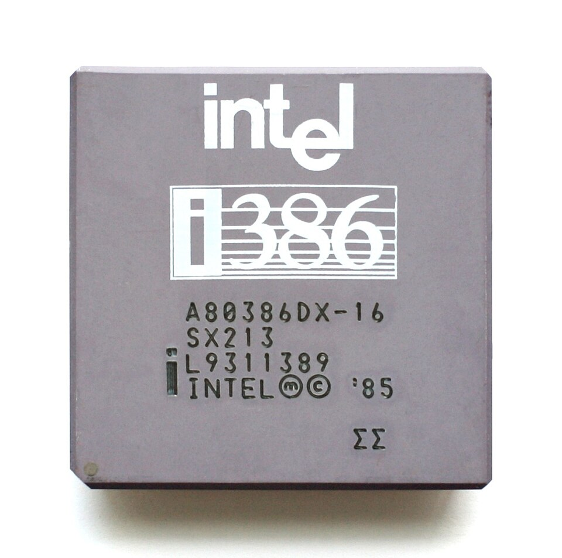
Intel 386 (1985) — first 32-bit x86. Every Windows program traces back to this instruction set. Konstantin Lanzet, Wikimedia Commons.
Read the table below like this: each row is a year. Columns show what Intel, AMD, and Apple were shipping that year, with the process node in nanometers and the fab (who manufactured it) in the parentheses. Watch what happens in 2019 and 2020 — the moments the whole industry shifted.
The chip landscape — the one table to remember
| Year | Intel | AMD | Apple Mac |
|---|---|---|---|
| 1978 | 8086 (3µm, Intel fab) | — | — |
| 1985 | 386 (1.5µm, Intel) | 386 clones (licensed) | — |
| 1993 | Pentium (0.8µm, Intel) | K5 (350nm) | PowerPC (IBM/Motorola) |
| 1999 | Pentium III (250nm, Intel) | Athlon — first to 1 GHz (250nm) | PowerPC G4 |
| 2003 | Pentium 4 (130nm, Intel) | Athlon 64 — invents x86-64 (130nm) | PowerPC G5 (IBM) |
| 2005 | Pentium D — first dual-core (90nm, Intel) | Athlon 64 X2 (90nm) | Transition to Intel begins |
| 2006 | Core 2 (65nm, Intel) — efficiency comeback | Athlon 64 X2 (65nm) | 🍎 Intel-based Macs launch |
| 2008 | 1st gen Core i7 (Nehalem, 45nm, Intel) — i3/i5/i7 branding begins | Phenom II (45nm, own fabs) | Intel Macs |
| 2011 | 2nd gen Sandy Bridge (32nm, Intel) | ⚠️ Bulldozer disaster (32nm, GlobalFoundries) | Intel Macs |
| 2013 | 4th gen Haswell (22nm, Intel) | (struggling) | Intel Macs |
| 2015 | 6th gen Skylake (14nm, Intel) — Intel gets STUCK here | (recovering) | Intel Macs |
| 2017 | 7th gen Kaby Lake (14nm, Intel — still) | ✨ Ryzen 1 (Zen, 14nm, GlobalFoundries) — comeback begins | Intel Macs |
| 2019 | 10th gen (14nm, Intel — 4 years stuck) | 🚀 Ryzen 3000 (Zen 2, 7nm, TSMC) — AMD ahead of Intel on process | Intel Macs |
| 2020 | 11th gen (14nm/10nm, Intel) | Ryzen 5000 Zen 3 (7nm, TSMC) | 🍎 Apple M1 (5nm, TSMC) — Intel Macs end |
| 2021 | 12th gen Alder Lake (10nm, Intel) — hybrid P+E cores (copies Apple) | Ryzen 5000 (7nm, TSMC) | M1 Pro / Max (5nm, TSMC) |
| 2022 | 13th gen Raptor Lake (10nm, Intel) | Ryzen 7000 Zen 4 (5nm, TSMC) | M1 Ultra + M2 (5nm, TSMC) |
| 2023 | 14th gen — last "Core i" · Core Ultra begins (7nm, Intel) | Ryzen 7000X3D (5nm, TSMC) | M3 (3nm, TSMC) |
| 2024 | Core Ultra 200 Arrow Lake — CPU tile outsourced to TSMC 3nm! (Intel's low point) | Ryzen 9000 Zen 5 (4nm, TSMC) | M4 (3nm, TSMC) |
| 2024–2025 | Core Ultra 200V Lunar Lake — CPU tile also TSMC 3nm | Ryzen 9000X3D2 (4nm, TSMC) | M4 / M4 Pro / M4 Max (3nm N3E, TSMC) |
| 2026 | Core Ultra 300 Panther Lake — CPU tile back on Intel 18A (~1.8nm, Fab 52 Arizona) 🎉; GPU/IO tiles still TSMC | Zen 6 (2nm, TSMC) | M4 Pro/Max (2nm, TSMC) |
Three moments in this table changed the industry:
- 2006 — Apple ditched PowerPC and switched to Intel. Every Mac from 2006 to 2020 ran on an Intel CPU.
- 2019 — AMD left their own GlobalFoundries fabs and moved production to TSMC in Taiwan. Overnight AMD jumped ahead of Intel on process node (7nm vs Intel's stuck 14nm).
- 2020 — Apple abandoned Intel and launched the M1, also made by TSMC. Ended Intel Macs. Started Apple Silicon.
AMD: Ryzen 3 / Ryzen 5 / Ryzen 7 / Ryzen 9 — mirrors Intel's system exactly.
Apple: M-base · M Pro · M Max · M Ultra — different words, same idea (more cores, more GPU, more memory).
Model format:
Intel Core i5-12400F = tier i5, 12th gen, SKU 400, F = no integrated GPU. Intel Core Ultra 9 285K = tier 9 (like old i9), Series 2, SKU 85, K = unlocked. AMD Ryzen 7 9800X3D = tier 7, Zen 5, SKU 9800, X3D = 3D-stacked cache. Apple M4 Pro = M4 generation, Pro tier.
"Put this table on the screen. Whole industry, one page. Three columns — Intel, AMD, Apple. Left column is years. Watch three moments. 2006 — Apple ditches PowerPC, switches to Intel. 2019 — AMD ditches its own fabs, moves to TSMC in Taiwan, immediately gets ahead of Intel. 2020 — Apple ditches Intel, launches M1 on TSMC. That's it. TSMC is the invisible winner. Intel is a giant that got stuck on its own manufacturing. Today every advanced chip in every device you own — except Intel PCs — is made in Taiwan. That's why Taiwan matters so much geopolitically. And the naming — i3 through i9 was Intel's tier system 2008–2023, now called Core Ultra 3–9. AMD does Ryzen 3–9. Apple does base, Pro, Max, Ultra. Same idea, different words."
AMD's comeback — the Zen story
Every Intel story needs its rival. That's AMD. And AMD's story from 2011 to 2026 is one of the greatest corporate turnarounds in tech history — the reason your Ryzen laptop is competitive with Intel today.
Dr. Lisa Su — CEO of AMD since 2014. The architect of the Zen comeback.
Lisa Su — PhD in electrical engineering from MIT. Poached from Freescale in 2012 as SVP; became CEO in 2014 when AMD was on the brink of bankruptcy. She bet the entire company on a new architecture called Zen. It shipped in 2017 as Ryzen. AMD's stock went from ~$2 to ~$150 by 2020.
You already saw AMD's chip releases in the year-by-year table in Section 9. Here's the human side — the near-bankruptcy, the CEO who saved the company, and the 5 business milestones that mattered.
The 5 moments that saved AMD
| Year | Moment |
|---|---|
| 2011 | ⚠️ Bulldozer ships. Disaster. Slower than Intel, runs hot, reviewers hate it. Stock crashes to ~$2. Wall Street says AMD is going bankrupt. |
| 2014 | 👩🔬 Lisa Su becomes CEO. Bets everything on a new architecture called Zen. Publicly commits to a multi-year turnaround plan. |
| 2017 | ✨ Ryzen ships. 40% IPC (instructions-per-clock) improvement over Bulldozer. AMD is suddenly competitive again. |
| 2019 | 🚀 Moved fabrication from GlobalFoundries to TSMC. Zen 2 ships on TSMC 7nm — first time in history AMD is ahead of Intel on process node. |
| 2024 | 💰 Zen 5. Datacenter (EPYC) share grew from 2% in 2017 to ~30%. Stock from $2 (2016) to ~$170. One of the biggest tech turnarounds ever. |
The 3 things Zen did differently from Bulldozer
Not an evolution of Bulldozer. Everything redesigned from scratch. 40% more work per clock cycle.
Bulldozer used a weird "shared FPU" module design. Zen went back to conventional SMT — 2 threads per core, same as Intel Hyper-Threading. Way more effective.
Zen 2 (2019) broke the CPU into multiple smaller dies ("chiplets") connected on a package. Much cheaper to manufacture than one huge die. Higher yields. Intel is only just catching up with tile-based designs in 2024.
multiprocessing and ProcessPoolExecutor to actually help.
"Here's a story I love telling. 2011 — AMD ships a chip called Bulldozer. It's a disaster. Slower than Intel, runs hot, everybody hates it. AMD stock drops to two dollars. Everyone says they're going bankrupt. 2014 — Lisa Su takes over as CEO. Bets the company on a new architecture called Zen. 2017 — Ryzen ships, and AMD is suddenly competitive again. By 2020, they're AHEAD of Intel on manufacturing process. Stock goes from 2 dollars to 150 dollars. Every core in your laptop exists because AMD came back. Without competition, Intel would still sell you 4 cores for a thousand dollars."
What is a thread? (Software, not hardware)
Students always get confused here. Let's be surgical.
The chair-and-worker analogy
One chair usually holds one worker. But some chip designs (Intel's Hyper-Threading, AMD's SMT) let one chair hold two workers who take turns whenever one is waiting. Apple's chips don't do this — one chair, one worker.
Same generation, different thread counts
| Chip | Cores | Threads | Why |
|---|---|---|---|
| Apple M4 Pro | 10 | 10 | 1 thread per core (Apple never used SMT) |
| Apple M3 Ultra | 36 | 36 | Same |
| Intel Core Ultra 7 270K Plus | 24 (8P + 16E) | 32 | P-cores have Hyper-Threading (2 each), E-cores don't |
| AMD Ryzen 9 9950X3D2 | 16 | 32 | Every Zen 5 core has SMT (2 each) |
| Snapdragon X2 Elite | 18 | 18 | Qualcomm didn't ship SMT |
threading module creates real OS threads.
"A core is a chair — physical hardware. A thread is a worker sitting in that chair. Apple chips: one chair, one worker. Intel and AMD chips: one chair can hold two workers who take turns. That's why an AMD Ryzen 16-core chip shows up as '32 threads' in Task Manager — 16 chairs, 32 workers."
Hyper-Threading / SMT — the 2-workers-per-chair trick
Intel invented Hyper-Threading in 2002 (first shipped on the Pentium 4). AMD calls their version SMT (Simultaneous Multithreading). Same idea, same trick.
Why it exists
A core often stalls — it needs data from RAM (a "cache miss"), or it's waiting for a division to finish. Those stall cycles are wasted. SMT lets a second thread step in and use those wasted moments.
[T1 work][T1 STALL waiting for RAM][T1 work][T1 work]
Core sits idle during stalls
[T1 work][T2 uses stall time][T1 work][T2 work]
Second thread fills the gaps → ~15–30% more throughput
Why Apple skipped it
Apple's cores are already very wide (many execution units) and very good at avoiding stalls. Adding SMT would complicate scheduling and hurt latency-sensitive work. Apple prioritizes per-thread performance over total throughput.
"Intel and AMD noticed cores waste time waiting for RAM. So they added a trick — let a second thread use those wasted moments. Not double the speed — usually 15 to 30 percent more work per core. That's why your AMD Ryzen 16-core chip advertises 32 threads. Apple looked at this and said no — they'd rather each worker be super fast alone. Different philosophy."
OS threads vs Python threads — how the software stack connects
Now the bridge from hardware to Python. When you write threading.Thread(target=fn), what actually happens?
# Your Python code import threading t = threading.Thread(target=my_function) t.start()
Every Python thread is a real, native, kernel-level OS thread. It costs about 8 MB of memory per thread (default stack size). It gets scheduled by the OS just like a C, Java, or Go thread.
What about async tasks?
Async tasks (coroutines) are completely different. They all live inside ONE thread. The event loop switches between them cooperatively at await points. No OS threads involved beyond the one running the loop.
"When you write threading.Thread, you get a real OS thread — same as C or Java. Costs about 8 megabytes of memory. Gets scheduled by macOS or Windows onto a real core. But — and this is the twist we'll unpack later — CPython has a rule: only ONE Python thread runs bytecode at a time. That's the GIL. Async tasks are different — they all live in one thread. We'll cover all three later. For now, just remember: threads are real, they're OS-level, they cost memory."
Slow #1 — One core sweating, others asleep
Now the payoff of Chapters 1 and 2. Your program can be slow in two completely different ways. Different symptoms, different fixes. Confusing them causes 90% of concurrency mistakes.
The CPU-bound program
def count_primes(n): return sum(1 for i in range(2, n) if is_prime(i)) count_primes(10_000_000) # Takes 30 seconds. CPU pinned.
Open Activity Monitor while this runs. You'll see:
This is CPU-bound. The bottleneck is computation. The CPU is not sleeping — it's struggling, and only on one core. The fix: spread the work across more cores. That's what multiprocessing does.
Slow #2 — Program idle, waiting on the world
The IO-bound program
import requests for user_id in range(1, 21): requests.get(f"https://api.example.com/users/{user_id}") # Takes 6 seconds. But CPU is at 2%.
Open Activity Monitor while this runs. You'll see:
This is IO-bound. The bottleneck is waiting — for the network, the disk, a database, a user. The CPU is not struggling — it's bored. The fix: don't wait sequentially. Start all the requests, then wait for all of them together.
Same work, same waits. Sequential waits three times in a row. Concurrent overlaps the waits.
The two pictures side by side
Screenshot this table. It is the most important table in the entire course.
| CPU-bound (Slow #1) | IO-bound (Slow #2) | |
|---|---|---|
| What CPU looks like | One core pinned at 100%, others idle | All cores near 0%. CPU is bored. |
| Bottleneck | Computation — pure Python math | Waiting — network, disk, DB, user |
| Examples | Image processing, ML training, Fibonacci, parsing giant JSON | API calls, web scraping, DB queries, file reads |
| What to do | Use more cores | Overlap the waits |
| Python tool | multiprocessing, ProcessPoolExecutor | asyncio, threading, ThreadPoolExecutor |
| Why the GIL matters | Kills threading. Forces you to use processes. | Doesn't matter. GIL is released during IO. |
IO-bound → overlap the waits (async or threads).
This is the #1 concurrency interview question. Answer it wrong and you sound like you've never used Python.
"Before you write a single line of concurrent code, ask ONE question: is my program calculating, or waiting? Open Activity Monitor. If one core is pinned at 100% — you're calculating. Use processes. If total CPU is 2% but the program takes forever — you're waiting. Use async or threads. Wrong tool for the wrong problem makes your code SLOWER, not faster."
Concurrency — many tasks in progress
Concurrency does not require multiple cores. On a single core, the OS (or an event loop) switches between tasks so quickly that many tasks appear to progress together — even though only one is executing at any given instant.
The restaurant analogy
One waiter, three tables. The waiter takes an order from table 1, sends it to the kitchen, walks to table 2, takes their order, sends it to the kitchen, delivers table 3's food when it's ready, and so on. One worker. Many tasks in progress. All three tables get served — none has to wait until the others are completely finished.
Table A + Table B + Table C — all "in progress" at once
Concurrent, but not parallel — the waiter is only in one place at a time
"One waiter, three tables. The waiter is never in two places at once. But all three tables are being served. All three orders are in progress. That's concurrency — many tasks in progress, not many tasks executing simultaneously."
Parallelism — many tasks executing at the same instant
The restaurant analogy — now with more waiters
Three waiters, three tables. Each waiter serves their own table. All three orders are being taken at the same instant. Three workers, three tables, true simultaneous service.
All three happening at literally the same second.
The relationship
| Statement | True or false? |
|---|---|
| Concurrency always means parallelism | False — async on one thread is concurrent, not parallel |
| Parallelism requires concurrent structure | Mostly true — you need separate tasks to run them in parallel |
| Async Python is concurrent | True |
| Async Python is parallel | False — one thread, one core for Python bytecode |
multiprocessing is parallel | True — separate processes on separate cores |
| Threading in Python speeds up CPU math | False — GIL blocks Python bytecode parallelism |
Concurrency enables parallelism, but does not require it.
Rob Pike — "Concurrency is not Parallelism" (2012)
The definitive talk on this topic. 31 minutes. If you watch one video for this entire lesson, make it this one — the first 5 minutes are enough to lock in the mental model.
 Watch on YouTube
Watch on YouTube
Pike's gopher analogy is the clearest visual for this distinction on the internet. His talk was originally for Go programmers, but the concepts are language-agnostic. Everything he says applies to Python.
OK — so which of Python's 3 tools is concurrency, and which is parallelism?
Now that we understand the two words — let's map them onto Python's toolbox. This is the answer that separates a beginner Python developer from an intermediate one.
| Tool | Concurrency? | Parallelism? | Why |
|---|---|---|---|
asyncio | ✅ Yes | ❌ Never | Single thread, one event loop. Coroutines take turns on one core. You can never run 2 coroutines at the same instant. |
threading | ✅ Yes | ⚠️ Only for C extensions | Real OS threads across multiple cores — BUT the GIL only lets 1 thread run Python bytecode at a time. Pure Python code = no parallelism. C extensions (numpy, pandas, PyTorch) that release the GIL = yes, real parallelism. |
multiprocessing | ✅ Yes | ✅ Yes, true parallelism | Each process has its own Python interpreter with its own GIL. They genuinely run at the same instant on different cores. Python's only tool for true parallelism of pure Python code. |
asyncio and threading help Python deal with many things at once. Only multiprocessing lets Python actually do many things at once."
1 thread, 1 core
ONLY for C extensions
for pure Python code
asyncio is 100% concurrent, 0% parallel — proof that the two ideas are separate. multiprocessing is both. threading is concurrent, and it becomes parallel only when it runs C code that releases the GIL (which is why numpy, pandas, PyTorch feel magically fast — they escape the GIL wall).
"Rob Pike is the co-creator of the Go language. This talk from 2012 is the reason the industry has clean vocabulary about concurrency vs parallelism today. Watch the first 5 minutes together — his gopher analogy nails it in a way I never can with words. And here's the punchline for Python: all three of our tools give you concurrency, but only multiprocessing gives you true parallelism for pure Python code. asyncio is single-threaded — it can never be parallel. threading is real OS threads but the GIL serializes Python bytecode, so it's parallel only when C libraries like numpy step outside the GIL. Multiprocessing is the escape hatch — separate processes, separate GILs, real multi-core execution. Remember: concurrency = dealing with, parallelism = doing."
Tool 1 — asyncio: one thread, smart waiting
Python's answer to IO-bound work. One thread, one event loop, thousands of coroutines.
asyncio = pure concurrency, zero parallelism. Everything runs in a single thread on a single CPU core. No matter how much asyncio code you write, you will never use more than one core. This is why asyncio is only for IO-bound work (waiting on network, disk, DB) — never for CPU-bound math.
import asyncio, httpx async def fetch_user(client, uid): r = await client.get(f"/users/{uid}") return r.json() async def main(): async with httpx.AsyncClient(base_url="https://api.example.com") as client: users = await asyncio.gather(*(fetch_user(client, i) for i in range(1, 21))) asyncio.run(main())
20 requests, but they all happen concurrently. Total time = the slowest one, not the sum. All in one thread.
requests — they freeze the loop.
| asyncio | |
|---|---|
| Best for | Many IO operations (APIs, websockets, agents) |
| Concurrent? | Yes |
| Parallel? | No — one thread |
| Scale | Thousands of tasks (lightweight coroutines) |
| Trap | time.sleep() or requests.get() blocks EVERYTHING |
Tool 2 — threading: OS threads, shared memory
When you're stuck with blocking libraries (like the old requests), threads let the OS run other work while one thread is blocked on IO.
threading = concurrency yes; parallelism ONLY for C extensions. These are real OS threads that the OS can put on multiple cores — but the GIL only lets 1 thread run Python bytecode at a time. So pure Python code gets zero speedup for CPU work. However, C libraries like numpy, pandas, and PyTorch release the GIL while their C code runs — and then threading gives you real parallelism. This is why threads work great for IO waits (the GIL is released while waiting) but fail for pure-Python math.
from concurrent.futures import ThreadPoolExecutor import requests def fetch(uid): return requests.get(f"https://api.example.com/users/{uid}").json() with ThreadPoolExecutor(max_workers=10) as ex: users = list(ex.map(fetch, range(1, 21)))
Under the hood: 10 real OS threads, each blocking on their own requests.get() call. Because CPython releases the GIL during IO, all 10 threads can wait in parallel — the OS handles it.
| threading | |
|---|---|
| Best for | IO-bound work with blocking libraries |
| Concurrent? | Yes |
| Parallel for CPU? | No — GIL serializes Python bytecode |
| Parallel for IO? | Effectively yes — threads release GIL while waiting |
| Trap | Shared memory → race conditions. Need Lock. |
counter += 1 can lose updates. Even though counter += 1 looks atomic, it's actually 3 steps: read, add, write. Two threads can interleave and produce wrong results. Use threading.Lock to protect shared state.
Tool 3 — multiprocessing: true parallel compute
Each process has its own Python interpreter, own memory, own GIL. The OS schedules them on different cores. True parallelism.
multiprocessing = concurrency + true parallelism for pure Python code. Each process is a fully independent Python interpreter with its own GIL — so they can genuinely execute at the same instant on multiple cores. This is the only way pure Python code can use more than one core. Trade-off: heavier (each process ~50 MB), and data must be pickled to move between processes.
from concurrent.futures import ProcessPoolExecutor def count_primes(n): return sum(1 for i in range(2, n) if is_prime(i)) if __name__ == "__main__": # required! (see below) with ProcessPoolExecutor(max_workers=4) as ex: results = list(ex.map(count_primes, [1_000_000]*4))
4 processes, 4 cores lit up in Activity Monitor. Actually parallel. Actually faster.
| multiprocessing | |
|---|---|
| Best for | CPU-bound computation |
| Concurrent? | Yes |
| Parallel? | Yes — true multi-core |
| Trap 1 | Higher memory (each process ~50 MB minimum) |
| Trap 2 | Data must be pickled to move between processes (slow for big objects) |
| Trap 3 | Requires if __name__ == "__main__" guard or children re-import and spawn forever |
if __name__ == "__main__" ritual
On Windows and macOS, child processes start by re-importing your script. Without the guard, they'd re-execute your ProcessPoolExecutor call and spawn more children infinitely. The guard says: "only run this code when I'm the main script, not when I'm being imported."
Fork vs spawn — the platform difference that bites everyone
| Start method | What happens | Default on |
|---|---|---|
| fork | Child is a copy of the parent process. Fast startup. Inherits memory. | Linux (until 3.14, then spawn) |
| spawn | Child launches a fresh Python interpreter and re-imports your code. Slower but clean. | Windows, macOS (default), Python 3.14+ on all platforms |
| forkserver | A "template" server process forks children. Compromise. | Opt-in on Linux |
Sharing data between processes (when you must)
multiprocessing.Queue — safest. FIFO queue, both processes can put/get. Data is pickled behind the scenes.multiprocessing.Pipe — two-endpoint channel. Faster than Queue but bidirectional and unbuffered.multiprocessing.shared_memory (Python 3.8+) — actual shared RAM. No pickling. Blazing fast for large numpy arrays.multiprocessing.Manager() — a helper process that hosts shared dicts/lists. Slower (all access is IPC) but very convenient.The execution hierarchy — where does everything live?
This is the map. Show it whenever a student asks "wait, is X inside Y?"
How Python's three tools map onto this hierarchy
| Tool | Creates | Where in hierarchy |
|---|---|---|
asyncio | Coroutines in one event loop | Bottom level — one thread runs the loop |
threading | OS threads | Middle level — many threads in one process |
multiprocessing | Separate processes | Top level — many processes on many cores |
The escape hatch — C extensions that release the GIL
numpy.dot(big_matrix, big_matrix) can saturate all your cores from a single Python thread. When Python people say "we use numpy" for ML — this is what makes it fast. The GIL only blocks Python bytecode, not the underlying C code.
Real numbers: a matrix multiplication in pure Python takes minutes. The same op via numpy takes milliseconds and uses every core. It's not that numpy avoids the GIL — it drops it while the C code runs. Any well-written C extension does this.
"Memorize this hierarchy. Computer → cores → processes → threads → event loop → coroutines. When a student says 'is async faster than threads' — first ask where they are in this map. They're solving different problems at different levels. And here's the escape hatch — libraries like numpy and PyTorch release the GIL when their C code runs, so a single thread can saturate every core. That's why AI in Python is fast despite the GIL — the actual math never runs in Python."
The Global Interpreter Lock — revealed
Now the plot twist that trips up every Python programmer at some point.
Why it exists
Every Python object has a reference count — how many things point to it. Every time you assign a variable or pass an object, that count goes up or down. If two threads bumped the same count at the same time, it would corrupt. The GIL is a blunt but simple fix: never let two threads run interpreter code at the same instant.
What it means for you
One Python process, many threads (with GIL)
Threads take turns. Every 5 ms, GIL switches to the next thread.
Many Python processes (each has own GIL)
All four run at the same instant. Each process = own interpreter = own GIL = own core.
Why threads don't speed up Python math
Consider this pure-Python computation split across threads:
from threading import Thread def count(n): x = 0 while x < n: x += 1 # One thread count(100_000_000) # ~5 seconds # Two threads doing half each t1 = Thread(target=count, args=(50_000_000,)) t2 = Thread(target=count, args=(50_000_000,)) t1.start(); t2.start(); t1.join(); t2.join() # ALSO ~5 seconds (or slower!)
But threads DO help IO
Because CPython releases the GIL during blocking IO calls (network, disk, sleep), other threads can run while one is waiting. That's why threading works beautifully for API calls with the requests library.
David Beazley — Understanding the Python GIL (2010)
 Watch on YouTube
Watch on YouTube
The canonical GIL talk. 46 minutes. Beazley shows the actual thread thrashing on a dual-core system — proof that two CPU-bound threads can be slower than one.
Lab — see it yourself in Activity Monitor
The theory is nothing until they've watched their own CPU do it. Run cpu-demo.py alongside Activity Monitor (Mac) or Task Manager (Windows).
python cpu-demo.py 1 # 1 thread → ~1 core busy python cpu-demo.py 2 # N threads → still ~1 core (GIL!) python cpu-demo.py 3 # N processes → N cores busy
| Demo | What happens on screen | Lesson |
|---|---|---|
| 1 — one thread | One core at ~100%, rest idle | A single thread only drives one core for CPU work |
| 2 — N threads | Still ~one core, even with N threads | GIL — threads take turns, no CPU speedup |
| 3 — N processes | Multiple cores light up | Each process = own GIL = own core = true parallelism |
Reading Activity Monitor
| What you see | Meaning |
|---|---|
| ~10% total on a 10-core machine | One core fully busy, nine idle |
| ~100% for the process (macOS) | One core fully busy |
| ~400% for the process on 4 cores | Four cores fully busy |
Same machine, different reporting. Numbers above 100% just mean multiple cores are in use.
Free-threaded Python 3.14 — the GIL becomes optional
The GIL was created in 1992. For 32 years, it was the immovable law of CPython. In 2023, PEP 703 was accepted — a plan to make the GIL optional. In 2024, Python 3.13 shipped experimental free-threaded builds. In October 2025, Python 3.14 made free-threading officially supported as a separate binary (python3.14t). This is PEP 779 — Phase II.
The caveats (very important)
- It's a separate binary. Default python.org downloads still have the GIL. You install
python3.14texplicitly. - Single-threaded performance overhead: ~10% (down from ~40% in 3.13).
- C extensions must opt in. Extensions built without the
Py_mod_gilmarker will cause the GIL to be re-enabled when loaded. - Phase III (default) is unscheduled. The Steering Council has not committed to making free-threading the default. Could be 2028+. Could roll back.
Check at runtime:
import sys sys._is_gil_enabled() # True on default, False on 3.14t
threading vs multiprocessing is the current, correct reality.
The other future — subinterpreters (PEP 734)
Python 3.14 also ships the interpreters module in the standard library. Each subinterpreter has its own GIL — meaning multiple subinterpreters in one process can run Python bytecode in parallel.
from concurrent.futures import InterpreterPoolExecutor with InterpreterPoolExecutor(max_workers=4) as ex: results = list(ex.map(cpu_heavy_fn, jobs)) # 4 subinterpreters, 4 cores, no GIL contention
Subinterpreters — mid-weight (share the OS process, own GIL each). New in 3.14.
Free-threaded — real threads no GIL, needs opt-in binary, 3.14 experimental.
For 2026 production code, still default to processes for CPU work.
The dangerous stuff — races, locks & deadlocks
You know the tools. Now the bugs. These three concepts show up in every mid-level and senior Python interview. Miss them and interviewers assume you've never shipped concurrent code.
1. Race conditions — "the GIL doesn't save you"
Common myth: "The GIL means Python code is thread-safe." Wrong. The GIL protects a single bytecode instruction, not your logical operation. Anything that spans multiple instructions can race.
from threading import Thread counter = 0 def increment(): global counter for _ in range(1_000_000): counter += 1 # NOT atomic! t1 = Thread(target=increment) t2 = Thread(target=increment) t1.start(); t2.start(); t1.join(); t2.join() print(counter) # Expected 2_000_000. Actual: something less. Every run different.
counter += 1 is 3 operations
1. Read the current value of counter into a register.2. Add 1 to that register.
3. Write the register back to counter.
Between step 1 and step 3, another thread can also read the same value. Both threads add 1 to the same starting number. One update is lost.
The fix — threading.Lock
from threading import Thread, Lock counter = 0 lock = Lock() def increment(): global counter for _ in range(1_000_000): with lock: # only one thread inside at a time counter += 1
Now every increment happens atomically. counter always ends at 2,000,000. Cost: threads have to wait for the lock. Trade-off: correctness > speed.
2. The synchronization primitives you need to know
| Primitive | What it does | Typical use |
|---|---|---|
Lock | 1 thread at a time in the critical section | Protect any shared mutable state |
RLock | Same as Lock but the owning thread can acquire it again (recursively) | Recursive functions that need locking |
Semaphore(n) | Up to N threads at a time | Rate limiting — "max 10 concurrent API calls" |
Event | Threads wait until event.set() fires | "Wait until worker is ready" |
Condition | Lock + wait/notify — threads sleep until a condition is true | Producer/consumer signalling |
Barrier(n) | All N threads must arrive before any proceeds | Parallel phases in scientific computing |
queue.Queue | Thread-safe FIFO queue with blocking put / get | The safest way to pass data between threads |
Queue over Lock
Whenever possible, don't share state — pass data through a Queue. Producers put(), consumers get(). Both blocking, both thread-safe. This is the design philosophy of Go and Erlang: "Don't communicate by sharing memory; share memory by communicating."
3. Deadlock — the two-lock trap
The scariest concurrency bug. Two threads, two locks, opposite order. Program hangs forever.
from threading import Thread, Lock lock_a, lock_b = Lock(), Lock() def thread_1(): with lock_a: time.sleep(0.1) with lock_b: # waits for thread_2 to release lock_b do_work() def thread_2(): with lock_b: time.sleep(0.1) with lock_a: # waits for thread_1 to release lock_a do_work() # Program hangs. Neither will ever release. Deadlock.
2. Hold and wait — a thread holds a resource while waiting for another.
3. No preemption — resources can't be forcibly taken.
4. Circular wait — thread A waits for B, B waits for A (a cycle).
Break any one of these and you cannot deadlock.
Deadlock prevention — the practical rules
If every thread grabs lock_a before lock_b, circular wait becomes impossible.
lock.acquire(timeout=5) — never wait forever. Fail loud instead of hanging silently.The less code inside
with lock:, the less chance of contention or nested-lock scenarios.Race conditions in asyncio — yes, they exist too
Common misconception: "async is single-threaded so races can't happen." Wrong. Every await is a potential context switch — another coroutine can run in between.
async def transfer(from_acc, to_acc, amount): balance = await get_balance(from_acc) # await → other coroutines run here! if balance >= amount: await set_balance(from_acc, balance - amount) # stale balance await set_balance(to_acc, await get_balance(to_acc) + amount)
Two concurrent transfers can both read the same starting balance and both succeed, over-drafting the account. Solution: asyncio.Lock or an atomic DB operation.
"Three things trip up every Python engineer at some point. One — race conditions. The GIL protects one bytecode, not your whole logical operation. Counter plus-equals one is NOT atomic. Use a Lock. Two — deadlocks. Two threads, two locks, opposite order, program hangs forever. Rule: always acquire in the same global order. Three — even asyncio has races, every await is a switch point. Ninety percent of concurrency bugs in production Python are one of these three. Learn to spot them."
asyncio power patterns you'll actually use
You know asyncio.gather. Real async code needs 5 more patterns. These are the ones interviewers ask about and production code depends on.
1. asyncio.TaskGroup — the modern gather (Python 3.11+)
Replaces gather for most cases. If any task raises, all siblings are cancelled cleanly.
async def fetch_all_users(ids): async with asyncio.TaskGroup() as tg: tasks = [tg.create_task(fetch_user(i)) for i in ids] return [t.result() for t in tasks]
ExceptionGroup. This is the modern default.
2. asyncio.as_completed — process results as they arrive
Instead of waiting for ALL tasks, handle each one as soon as it finishes.
async def first_result(urls): tasks = [asyncio.create_task(fetch(url)) for url in urls] for future in asyncio.as_completed(tasks): result = await future print(f"Got: {result}") # prints in completion order, not input order
3. asyncio.timeout — Python 3.11+ (the good timeout)
async with asyncio.timeout(5.0): result = await slow_api_call() # TimeoutError raised if it takes more than 5 seconds
4. asyncio.Semaphore — rate limiting
Every API has a rate limit. This one line saves you from getting your key banned.
sem = asyncio.Semaphore(10) # max 10 concurrent async def fetch_polite(url): async with sem: return await httpx_client.get(url) async def main(): async with asyncio.TaskGroup() as tg: for url in thousand_urls: tg.create_task(fetch_polite(url)) # at most 10 in flight at any time
5. asyncio.to_thread — bridge blocking libraries into async
Stuck with a blocking library like requests or an old DB driver? Don't rewrite it — offload it.
import asyncio, requests # requests is blocking async def fetch_via_thread(url): # Runs the blocking requests.get in a background thread, # awaits it without blocking the event loop. return await asyncio.to_thread(requests.get, url)
asyncio.to_thread(fn, *args) — run a blocking function in a background thread. Best for IO-bound blocking libs.loop.run_in_executor(pool, fn, *args) — run in a custom ThreadPoolExecutor or ProcessPoolExecutor. Best for CPU chunks inside async code.asyncio.run(coro) — enter async world from a sync function.
6. loop.run_in_executor — CPU work inside async code
Say your FastAPI endpoint needs to run an ML inference (CPU-heavy). Don't block the loop — offload to a process pool.
from concurrent.futures import ProcessPoolExecutor process_pool = ProcessPoolExecutor() async def predict(image_bytes): loop = asyncio.get_event_loop() return await loop.run_in_executor(process_pool, run_ml_inference, image_bytes)
The big pitfall — blocking the event loop
time.sleep(1)— useawait asyncio.sleep(1)requests.get(url)— usehttpx.AsyncClientorasyncio.to_threadheavy_math(...)— offload toloop.run_in_executor(process_pool, ...)open("file").read()for big files — useaiofilesorto_thread
The interview questions that come from this section
| Question | One-line answer |
|---|---|
Difference between gather and TaskGroup? | TaskGroup (3.11+) is structured — if one task fails, siblings are cancelled and errors group into an ExceptionGroup. Use it instead of gather. |
| How do you rate-limit concurrent API calls? | asyncio.Semaphore(N) — max N in flight simultaneously. |
| You have a blocking library in an async app. What do you do? | await asyncio.to_thread(blocking_fn, *args) |
| You need to run heavy CPU work inside FastAPI. How? | loop.run_in_executor(ProcessPoolExecutor(), cpu_fn, *args) |
What happens if you call time.sleep(5) in an async handler? | Freezes the entire event loop for 5 seconds. Every other request blocks. |
"Everyone learns gather. Real production async needs six more tricks. TaskGroup for structured concurrency — cleaner errors. as_completed to stream results. asyncio.timeout for bounds. Semaphore for rate limits. And two bridges — to_thread for blocking libraries, run_in_executor for CPU work. Master these six and you can write any async system you'll encounter."
The decision tree — memorize this
Interview cheat sheet — the 15 questions you'll get
| Question | One-line answer |
|---|---|
| Concurrency vs parallelism? | Concurrency is structure (dealing with many tasks). Parallelism is execution (doing many at once). Async is concurrent; multiprocessing can be parallel. |
| What is the GIL? | A CPython mutex allowing one thread to run Python bytecode at a time. Protects reference counting. |
| Do threads speed up CPU-bound Python? | No — use multiprocessing. Threads only help IO (GIL released during blocking calls). |
| async vs threading? | Both handle IO. Async is lighter and scales to thousands of coroutines. Threading for blocking libraries. |
| Why does Python have three concurrency models? | Two different problems (IO wait vs CPU compute) plus the GIL. No one tool fits all workloads. |
Is counter += 1 thread-safe under the GIL? | No — it's 3 bytecodes (read, add, write). Threads can interleave. Use a Lock. |
| What is a deadlock and how do you prevent it? | Two threads waiting for each other's locks (circular wait). Prevent with consistent lock ordering + timeouts. |
| How does numpy work fast if Python has a GIL? | numpy is C code that releases the GIL while running. C code isn't Python bytecode, so it's not affected. |
gather vs TaskGroup? | TaskGroup (3.11+) is structured concurrency — one failure cancels siblings. Use it as the default. |
| How do you rate-limit async calls? | asyncio.Semaphore(N) — max N in flight. |
| You have a blocking library in async code. Fix? | await asyncio.to_thread(blocking_fn, args) |
| Fork vs spawn? | Fork copies the parent (fast, Linux-y). Spawn re-imports and re-executes (Windows/macOS default; also Python 3.14+ default everywhere). Spawn is safer but slower. |
Difference between Lock and Semaphore? | Lock allows 1 thread at a time. Semaphore(N) allows N threads at a time. |
| What are subinterpreters? | New in Python 3.14. Multiple Python interpreters in one OS process, each with its own GIL. A middle ground between threads and processes. |
| Why is free-threaded Python not the default yet? | ~10% single-threaded overhead. C extensions must opt in. Ecosystem is still catching up. Steering Council needs to be sure of stability. |
2. Do you know the GIL doesn't protect logical operations like
counter += 1? (Mid)3. Can you diagnose a hang (deadlock) or a wrong result (race) in production code? (Senior)
🎯 The answer — remember Section 1?
Way back in Section 1, you ran python cpu-demo.py 1 and watched one core burn while the others slept. You took a screenshot. You asked "why?" Then we spent 30 sections going back in time — 1971 microprocessor, 2005 heat wall, TSMC and ARM, cores and threads, the GIL, race conditions. Now we come full circle.
The exact same problem, three ways
Open the same terminal. Open the same Activity Monitor. Run these one at a time.
python cpu-demo.py 1 # 1 thread → ~1 core busy (the original question) python cpu-demo.py 2 # N threads → STILL ~1 core (the GIL is real!) python cpu-demo.py 3 # N processes → all cores busy 🎉 (multiprocessing wins)
Demo 2 — Python creates N real OS threads. Total CPU is still ~1 core's worth. The GIL serialized them all. You just proved with your own eyes that Python threads don't parallelize CPU work.
Demo 3 — Python creates N processes. Each has its own interpreter, its own GIL. Your CPU history graph goes all red — every core is finally doing work. Section 1's question is now answered.
Why every single section mattered — the payoff in one paragraph
asyncio, threading, multiprocessing (Chapter 6) — but the GIL means only multiprocessing unlocks all your cores for pure Python code (Chapter 7). When you use these tools you get race conditions and deadlocks which need Locks and TaskGroups (Chapter 8). You then use the decision tree to pick the right tool for the job (Chapter 9). You now understand your laptop, your Python, and why the two argue.
Where every one of these tools shows up in your career
Practice assignment — concurrency.py
- Lab 0 (re-run the opening experiment): run
cpu-demo.pydemos 1, 2, 3. Screenshot Activity Monitor for each. In one sentence, explain why Demo 2 looks like Demo 1 and Demo 3 does not. - Async: write
simulate_api(name, delay)thatawait asyncio.sleep(delay). Call it 3 times sequentially, then 3 times withasyncio.gather. Print both durations. - Threads: use
ThreadPoolExecutorto fetch/users/1–/users/5from JSONPlaceholder. Compare to sequentialrequests.get. - Processes: use
ProcessPoolExecutorto compute Fibonacci for[100_000, 200_000, 300_000, 400_000]. Compare to sequential. - Writeup: in comments, answer — why do threads help #3 but not #4? Why does multiprocessing help #4? What role does the GIL play in each?
asyncio, threading, multiprocessing) and which is concurrency vs parallelism. You know the GIL and why 3.14 is finally killing it. You know race conditions, deadlocks, TaskGroup, Semaphore, to_thread. And you can decide the right tool in a real crisis. That's not textbook Python. That's engineering.
"Look at this. Section 1 — you ran a Python script, watched one core burn, and asked me why. I made you a promise. I said: by the end of this class, we'll come back to this exact terminal and every single core on your laptop will light up. Run demo 3 with me right now. There. Every core. Red. That's your Python — using every worker you paid for. And you now know exactly why it works: separate processes = separate GILs = true parallelism. You started this class thinking Python was slow. You end it knowing Python isn't slow — you just needed the right tool for the right kind of slow. That's the difference between a Python user and a Python engineer. That's what this whole course was for. Next up — Part 55, Big-O thinking. See you there."